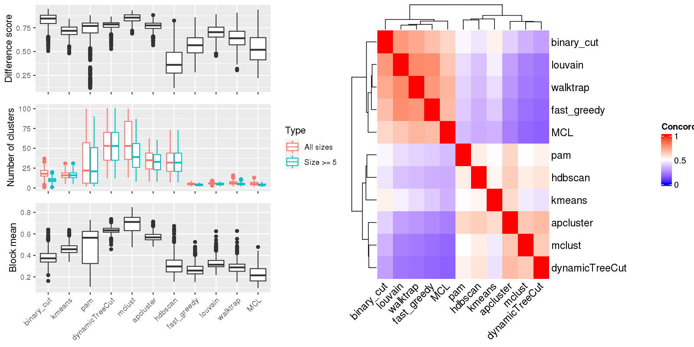

Figure 1.Compare clustering results. Left panel: The difference score, number of clusters and the block mean of different clusterings. Right panel: Concordance between clustering methods. The concordance measures how similar two clusterings are. The definition of the concordance score can be found here.

Table 1.Number of clusters identified by each clustering method. Numbers in the table indicate the number of clusters. The numbers inside the parentheses are the number of clusters with size >= 5.
| ID | binary_cut | kmeans | pam | dynamicTreeCut | mclust | apcluster | hdbscan | fast_greedy | louvain | walktrap | MCL | Details |
|---|---|---|---|---|---|---|---|---|---|---|---|---|
| E-GEOD-101794_g2_g1 | 25(14) | 23(23) | 62(61) | 72(72) | 65(56) | 45(44) | 46(46) | 4(4) | 4(4) | 6(6) | 2(2) | view |
| E-GEOD-10311_A-AFFY-44_g6_g4 | 24(12) | 16(16) | 2(2) | 69(69) | 36(32) | 40(39) | 41(41) | 7(2) | 5(4) | 6(3) | 7(3) | view |
| E-GEOD-104288_g2_g1 | 11(7) | 12(11) | 2(2) | 17(17) | 35(13) | 13(12) | 11(11) | 6(6) | 6(6) | 6(5) | 5(5) | view |
| E-GEOD-10718_A-AFFY-44_g4_g3 | 18(9) | 14(13) | 38(30) | 37(37) | 31(26) | 31(27) | 24(24) | 6(5) | 7(5) | 6(4) | 7(4) | view |
| E-GEOD-10718_A-AFFY-44_g5_g6 | 19(11) | 13(13) | 48(42) | 47(47) | 57(43) | 33(32) | 28(28) | 5(4) | 7(7) | 6(5) | 4(3) | view |
| E-GEOD-10797_A-AFFY-37_g1_g3 | 26(16) | 17(17) | 53(50) | 63(63) | 70(57) | 41(39) | 41(41) | 5(5) | 6(6) | 6(6) | 7(6) | view |
| E-GEOD-10927_A-AFFY-44_g2_g3 | 21(13) | 11(10) | 2(2) | 30(30) | 47(30) | 23(20) | 27(27) | 5(5) | 5(5) | 9(7) | 8(6) | view |
| E-GEOD-11285_A-AFFY-44_g1_g2 | 14(8) | 11(11) | 8(8) | 25(25) | 32(22) | 17(17) | 18(18) | 4(4) | 4(4) | 3(3) | 7(4) | view |
| E-GEOD-11285_A-AFFY-44_g3_g4 | 22(14) | 16(16) | 10(10) | 85(85) | 42(40) | 47(45) | 51(51) | 5(4) | 6(5) | 6(5) | 3(2) | view |
| E-GEOD-11324_A-AFFY-44_g1_g4 | 16(8) | 15(15) | 5(5) | 55(55) | 91(46) | 32(32) | 30(30) | 5(4) | 5(5) | 6(5) | 5(4) | view |
| E-GEOD-11352_A-AFFY-44_g1_g6 | 19(9) | 8(8) | 23(21) | 24(24) | 42(20) | 16(15) | 15(15) | 6(5) | 6(5) | 9(7) | 8(5) | view |
| E-GEOD-11352_A-AFFY-44_g3_g4 | 11(5) | 8(8) | 12(11) | 15(15) | 24(14) | 16(15) | 12(12) | 6(5) | 7(6) | 7(4) | 6(3) | view |
| E-GEOD-11428_A-AFFY-44_g3_g1 | 19(11) | 17(17) | 63(52) | 53(53) | 65(56) | 35(32) | 43(43) | 7(6) | 9(8) | 11(9) | 6(5) | view |
| E-GEOD-11783_A-AFFY-44_g1_g2 | 28(14) | 19(19) | 81(78) | 80(80) | 63(58) | 53(50) | 54(54) | 4(4) | 5(5) | 6(6) | 1(1) | view |
| E-GEOD-11791_A-AFFY-44_g3_g4 | 10(4) | 12(11) | 23(20) | 23(23) | 47(21) | 17(16) | 16(16) | 6(4) | 6(4) | 9(4) | 6(3) | view |
| E-GEOD-11839_A-AFFY-44_g2_g1 | 13(7) | 11(11) | 12(12) | 16(16) | 25(12) | 14(14) | 13(13) | 5(5) | 6(6) | 7(5) | 7(5) | view |
| E-GEOD-11886_A-AFFY-44_g3_g1 | 26(14) | 15(15) | 93(83) | 90(90) | 99(73) | 56(53) | 65(65) | 4(4) | 4(4) | 6(6) | 2(2) | view |
| E-GEOD-11919_A-AFFY-44_g1_g2 | 27(12) | 15(15) | 2(2) | 55(55) | 40(38) | 34(33) | 31(31) | 4(4) | 5(5) | 5(5) | 6(5) | view |
| E-GEOD-11919_A-AFFY-44_g1_g3 | 10(10) | 13(13) | 9(9) | 53(53) | 63(55) | 32(30) | 26(26) | 4(4) | 5(5) | 5(5) | 6(5) | view |
| E-GEOD-12265_A-AFFY-44_g1_g4 | 25(14) | 27(27) | 52(48) | 63(63) | 80(49) | 42(39) | 39(39) | 4(4) | 5(5) | 6(6) | 2(2) | view |
| E-GEOD-12355_A-AFFY-44_g11_g12 | 20(10) | 16(16) | 6(6) | 69(69) | 95(68) | 45(43) | 44(44) | 4(3) | 5(4) | 6(5) | 4(4) | view |
| E-GEOD-12355_A-AFFY-44_g4_g6 | 16(7) | 13(12) | 2(2) | 34(34) | 65(29) | 20(19) | 26(26) | 6(4) | 6(5) | 8(3) | 5(3) | view |
| E-GEOD-12355_A-AFFY-44_g7_g8 | 19(8) | 15(15) | 5(5) | 70(70) | 36(35) | 43(42) | 46(46) | 5(3) | 6(4) | 7(5) | 6(3) | view |
| E-GEOD-12355_A-AFFY-44_g7_g9 | 17(9) | 16(15) | 2(2) | 43(43) | 30(28) | 30(29) | 30(30) | 5(2) | 5(4) | 7(5) | 7(6) | view |
| E-GEOD-12446_A-AFFY-44_g1_g4 | 11(4) | 8(7) | 13(10) | 12(12) | 26(9) | 11(10) | 10(10) | 4(4) | 5(5) | 10(6) | 6(2) | view |
| E-GEOD-12452_A-AFFY-44_g2_g1 | 20(9) | 11(11) | 33(28) | 31(31) | 45(30) | 23(21) | 23(23) | 6(3) | 6(5) | 5(4) | 4(3) | view |
| E-GEOD-12773_A-AFFY-44_g1_g2 | 20(14) | 16(15) | 75(68) | 75(75) | 88(64) | 50(46) | 51(51) | 3(3) | 5(5) | 5(5) | 2(2) | view |
| E-GEOD-12791_A-AFFY-33_g4_g2 | 20(13) | 18(18) | 8(8) | 99(99) | 98(82) | 56(53) | 62(62) | 5(5) | 6(6) | 7(7) | 6(6) | view |
| E-GEOD-12886_A-AFFY-44_g1_g2 | 13(6) | 17(16) | 13(13) | 41(41) | 69(37) | 28(25) | 20(20) | 5(3) | 6(5) | 6(4) | 7(5) | view |
| E-GEOD-12963_A-AFFY-44_g3_g1 | 16(10) | 10(10) | 10(10) | 54(54) | 99(44) | 27(26) | 28(28) | 4(3) | 5(5) | 4(4) | 4(4) | view |
| E-GEOD-13274_A-AFFY-44_g1_g3 | 16(9) | 17(17) | 58(51) | 60(60) | 100(57) | 38(36) | 39(39) | 5(5) | 6(6) | 7(6) | 5(5) | view |
| E-GEOD-13637_A-AFFY-44_g1_g2 | 20(10) | 18(18) | 96(87) | 101(101) | 99(87) | 58(55) | 51(51) | 5(4) | 5(5) | 6(5) | 4(4) | view |
| E-GEOD-13637_A-AFFY-44_g1_g9 | 21(8) | 15(15) | 6(6) | 92(92) | 46(42) | 52(51) | 63(63) | 7(4) | 7(5) | 9(5) | 6(4) | view |
| E-GEOD-13637_A-AFFY-44_g5_g1 | 17(11) | 19(19) | 47(47) | 66(66) | 95(59) | 44(43) | 37(37) | 5(3) | 5(4) | 6(4) | 6(4) | view |
| E-GEOD-13637_A-AFFY-44_g5_g3 | 26(10) | 13(13) | 7(7) | 86(86) | 88(71) | 43(41) | 46(46) | 6(5) | 7(6) | 8(7) | 5(4) | view |
| E-GEOD-13762_A-AFFY-44_g3_g2 | 17(13) | 18(18) | 86(77) | 88(88) | 96(70) | 56(55) | 54(54) | 5(4) | 5(4) | 4(4) | 4(3) | view |
| E-GEOD-13763_A-AFFY-44_g1_g2 | 25(10) | 12(12) | 2(2) | 48(48) | 53(41) | 30(26) | 28(28) | 5(4) | 6(5) | 8(6) | 6(4) | view |
| E-GEOD-13763_A-AFFY-44_g1_g4 | 15(9) | 11(11) | 2(2) | 32(32) | 54(27) | 27(25) | 18(18) | 4(4) | 5(5) | 6(5) | 9(8) | view |
| E-GEOD-13763_A-AFFY-44_g3_g2 | 20(10) | 12(12) | 6(6) | 49(49) | 68(47) | 34(31) | 32(32) | 5(5) | 6(6) | 4(4) | 5(5) | view |
| E-GEOD-13763_A-AFFY-44_g3_g4 | 19(8) | 15(14) | 3(3) | 33(33) | 49(31) | 25(24) | 22(22) | 2(2) | 4(4) | 3(3) | 6(4) | view |
| E-GEOD-13887_A-AFFY-44_g3_g2 | 15(9) | 17(17) | 80(72) | 74(74) | 98(69) | 46(43) | 47(47) | 5(4) | 6(5) | 5(4) | 6(5) | view |
| E-GEOD-13909_A-AFFY-44_g3_g4 | 27(14) | 18(18) | 84(77) | 91(91) | 93(73) | 58(54) | 57(57) | 6(4) | 5(4) | 6(4) | 3(2) | view |
| E-GEOD-13987_A-AFFY-44_g5_g6 | 21(12) | 18(18) | 38(37) | 50(50) | 81(44) | 31(30) | 32(32) | 4(4) | 4(4) | 6(6) | 7(5) | view |
| E-GEOD-14580_A-AFFY-44_g2_g3 | 22(12) | 22(22) | 91(83) | 92(92) | 98(76) | 58(54) | 59(59) | 5(5) | 4(4) | 7(5) | 6(2) | view |
| E-GEOD-14905_A-AFFY-44_g3_g2 | 5(5) | 13(13) | 6(6) | 50(50) | 47(34) | 31(31) | 26(26) | 5(5) | 6(6) | 9(7) | 7(3) | view |
| E-GEOD-14995_A-AFFY-44_g1_g2 | 21(10) | 13(13) | 16(16) | 38(38) | 26(25) | 25(24) | 24(24) | 5(4) | 7(5) | 12(7) | 8(4) | view |
| E-GEOD-15799_A-AFFY-44_g1_g2 | 19(8) | 23(22) | 2(2) | 62(62) | 61(48) | 39(38) | 38(38) | 4(4) | 5(4) | 11(8) | 4(3) | view |
| E-GEOD-15811_A-AFFY-44_g1_g2 | 20(15) | 23(23) | 2(2) | 85(85) | 93(67) | 54(52) | 52(52) | 5(5) | 4(4) | 7(6) | 2(2) | view |
| E-GEOD-15811_A-AFFY-44_g1_g3 | 14(12) | 15(15) | 62(60) | 67(67) | 90(61) | 47(46) | 48(48) | 5(4) | 6(5) | 6(5) | 5(3) | view |
| E-GEOD-15811_A-AFFY-44_g1_g4 | 20(12) | 16(16) | 69(68) | 80(80) | 93(69) | 52(51) | 53(53) | 5(4) | 5(5) | 8(6) | 2(1) | view |
| E-GEOD-15893_A-AFFY-44_g3_g2 | 10(10) | 20(20) | 64(56) | 66(66) | 96(62) | 45(43) | 41(41) | 5(4) | 5(5) | 5(4) | 7(4) | view |
| E-GEOD-15947_A-AFFY-44_g1_g2 | 13(12) | 18(17) | 42(40) | 50(50) | 27(27) | 41(39) | 32(32) | 5(4) | 5(4) | 4(3) | 5(4) | view |
| E-GEOD-16066_A-AFFY-44_g2_g1 | 17(6) | 17(16) | 19(18) | 24(24) | 32(19) | 24(19) | 16(16) | 5(5) | 6(6) | 5(4) | 7(5) | view |
| E-GEOD-1615_A-AFFY-33_g6_g5 | 17(11) | 15(15) | 6(6) | 47(47) | 54(38) | 27(25) | 23(23) | 5(5) | 6(6) | 6(5) | 5(5) | view |
| E-GEOD-16179_A-AFFY-44_g1_g4 | 13(6) | 10(10) | 2(2) | 17(17) | 13(12) | 13(13) | 11(11) | 7(5) | 6(5) | 9(4) | 4(2) | view |
| E-GEOD-16238_A-AFFY-44_g2_g1 | 22(12) | 23(23) | 2(2) | 50(50) | 28(27) | 30(28) | 32(32) | 6(4) | 5(4) | 8(7) | 6(3) | view |
| E-GEOD-16837_A-AFFY-44_g22_g11 | 14(8) | 22(21) | 45(41) | 58(58) | 82(52) | 40(38) | 40(40) | 5(4) | 6(5) | 6(4) | 4(3) | view |
| E-GEOD-16837_A-AFFY-44_g22_g21 | 19(8) | 19(19) | 76(66) | 75(75) | 80(66) | 48(47) | 55(55) | 5(4) | 6(5) | 9(5) | 7(3) | view |
| E-GEOD-16837_A-AFFY-44_g22_g29 | 20(11) | 20(20) | 57(51) | 63(63) | 38(35) | 41(41) | 44(44) | 7(5) | 8(6) | 9(6) | 7(4) | view |
| E-GEOD-16837_A-AFFY-44_g22_g3 | 14(6) | 20(20) | 50(47) | 56(56) | 80(51) | 36(36) | 23(23) | 6(3) | 6(5) | 6(4) | 6(4) | view |
| E-GEOD-16837_A-AFFY-44_g22_g4 | 15(7) | 12(12) | 20(20) | 36(36) | 54(33) | 28(27) | 22(22) | 5(4) | 6(5) | 5(4) | 6(4) | view |
| E-GEOD-16879_A-AFFY-44_g13_g10 | 15(10) | 17(17) | 85(80) | 82(82) | 41(36) | 54(53) | 62(62) | 5(4) | 5(5) | 5(4) | 2(2) | view |
| E-GEOD-16879_A-AFFY-44_g13_g12 | 14(13) | 20(20) | 80(73) | 78(78) | 100(70) | 54(50) | 49(49) | 5(5) | 5(5) | 6(4) | 5(2) | view |
| E-GEOD-17347_A-AFFY-44_g4_g2 | 15(11) | 19(19) | 59(52) | 66(66) | 83(55) | 44(39) | 32(32) | 4(4) | 5(5) | 6(5) | 4(3) | view |
| E-GEOD-17508_A-AFFY-44_g1_g2 | 15(10) | 12(12) | 26(23) | 27(27) | 42(24) | 23(21) | 21(21) | 5(5) | 6(5) | 7(4) | 6(4) | view |
| E-GEOD-18105_A-AFFY-44_g1_g2 | 11(6) | 11(11) | 5(5) | 32(32) | 58(28) | 21(20) | 20(20) | 6(5) | 6(5) | 6(5) | 7(5) | view |
| E-GEOD-18791_A-AFFY-44_g11_g2 | 11(5) | 20(20) | 36(35) | 70(70) | 99(61) | 40(38) | 44(44) | 5(3) | 4(3) | 4(4) | 3(3) | view |
| E-GEOD-18791_A-AFFY-44_g11_g6 | 19(13) | 16(16) | 57(50) | 62(62) | 72(54) | 40(38) | 38(38) | 4(4) | 5(5) | 4(4) | 3(3) | view |
| E-GEOD-19018_A-AFFY-44_g1_g3 | 16(8) | 13(13) | 4(4) | 54(54) | 94(56) | 36(35) | 40(40) | 3(3) | 4(4) | 4(4) | 2(2) | view |
| E-GEOD-19018_A-AFFY-44_g2_g1 | 5(5) | 19(19) | 4(4) | 51(51) | 38(31) | 33(32) | 31(31) | 6(3) | 7(6) | 7(5) | 10(6) | view |
| E-GEOD-19018_A-AFFY-44_g2_g4 | 22(11) | 17(17) | 5(5) | 82(82) | 46(44) | 46(45) | 41(41) | 3(3) | 5(5) | 6(5) | 4(3) | view |
| E-GEOD-19249_A-AFFY-37_g6_g5 | 28(14) | 16(16) | 10(10) | 67(67) | 45(39) | 43(41) | 39(39) | 6(5) | 7(6) | 10(7) | 8(7) | view |
| E-GEOD-19279_A-AFFY-33_g2_g4 | 25(12) | 23(23) | 53(49) | 62(62) | 48(44) | 41(38) | 29(29) | 5(4) | 6(6) | 7(6) | 4(3) | view |
| E-GEOD-19639_A-AFFY-44_g6_g4 | 16(9) | 14(14) | 34(33) | 39(39) | 68(34) | 27(27) | 27(27) | 6(5) | 5(5) | 7(6) | 8(4) | view |
| E-GEOD-19639_A-AFFY-44_g7_g5 | 21(12) | 14(14) | 27(26) | 39(39) | 50(32) | 28(27) | 18(18) | 5(5) | 5(5) | 5(4) | 4(3) | view |
| E-GEOD-19650_A-AFFY-44_g4_g1 | 25(12) | 18(18) | 39(35) | 54(54) | 49(43) | 36(31) | 29(29) | 3(3) | 6(6) | 6(5) | 3(2) | view |
| E-GEOD-19650_A-AFFY-44_g4_g2 | 22(11) | 14(13) | 12(12) | 38(38) | 25(22) | 26(24) | 25(25) | 5(4) | 7(6) | 7(5) | 5(4) | view |
| E-GEOD-19650_A-AFFY-44_g4_g3 | 16(8) | 15(15) | 2(2) | 29(29) | 39(30) | 20(19) | 21(21) | 6(6) | 6(6) | 4(4) | 5(4) | view |
| E-GEOD-20505_A-AFFY-44_g7_g4 | 23(13) | 16(16) | 52(45) | 58(58) | 56(44) | 33(30) | 40(40) | 5(5) | 5(5) | 4(4) | 4(4) | view |
| E-GEOD-20505_A-AFFY-44_g7_g5 | 20(12) | 15(15) | 46(41) | 50(50) | 50(40) | 34(31) | 33(33) | 6(6) | 6(6) | 6(5) | 3(3) | view |
| E-GEOD-20505_A-AFFY-44_g7_g6 | 24(13) | 19(19) | 17(17) | 56(56) | 53(37) | 34(31) | 29(29) | 3(3) | 6(6) | 10(9) | 3(3) | view |
| E-GEOD-20602_A-AFFY-33_g1_g2 | 16(9) | 15(15) | 34(29) | 38(38) | 28(23) | 29(26) | 21(21) | 5(4) | 6(5) | 8(6) | 5(3) | view |
| E-GEOD-21422_A-AFFY-44_g3_g1 | 27(12) | 14(14) | 6(6) | 63(63) | 86(60) | 37(36) | 29(29) | 6(4) | 6(6) | 8(5) | 9(5) | view |
| E-GEOD-21422_A-AFFY-44_g3_g2 | 23(12) | 14(14) | 87(74) | 84(84) | 73(62) | 54(49) | 52(52) | 4(3) | 5(5) | 7(6) | 5(4) | view |
| E-GEOD-21610_A-AFFY-44_g5_g1 | 12(10) | 9(9) | 13(12) | 21(21) | 18(13) | 16(14) | 13(13) | 6(5) | 7(7) | 6(4) | 6(5) | view |
| E-GEOD-22139_A-AFFY-44_g6_g3 | 15(9) | 12(11) | 13(13) | 27(27) | 33(23) | 20(18) | 15(15) | 5(5) | 4(4) | 4(4) | 7(5) | view |
| E-GEOD-22278_A-AFFY-41_g5_g1 | 15(12) | 22(22) | 74(66) | 83(83) | 80(68) | 52(50) | 51(51) | 3(3) | 5(5) | 3(3) | 2(2) | view |
| E-GEOD-22385_A-AFFY-37_g1_g2 | 20(9) | 15(15) | 6(6) | 88(88) | 45(42) | 54(53) | 53(53) | 6(5) | 6(5) | 7(6) | 8(7) | view |
| E-GEOD-22529_A-AFFY-33_g2_g1 | 20(13) | 18(18) | 66(61) | 67(67) | 64(53) | 40(39) | 52(52) | 4(4) | 4(4) | 7(6) | 4(3) | view |
| E-GEOD-22611_A-AFFY-44_g1_g6 | 11(5) | 9(9) | 3(3) | 12(12) | 23(10) | 11(11) | 10(10) | 3(3) | 4(4) | 3(3) | 6(3) | view |
| E-GEOD-22611_A-AFFY-44_g2_g3 | 14(7) | 7(7) | 4(4) | 16(16) | 19(12) | 12(11) | 7(7) | 5(5) | 5(5) | 4(4) | 5(4) | view |
| E-GEOD-22611_A-AFFY-44_g9_g4 | 12(5) | 5(5) | 9(8) | 13(13) | 15(11) | 13(11) | 10(10) | 5(4) | 6(5) | 3(3) | 7(3) | view |
| E-GEOD-22779_A-AFFY-44_g4_g1 | 24(13) | 19(19) | 61(58) | 69(69) | 82(57) | 50(48) | 41(41) | 3(3) | 4(4) | 4(4) | 2(2) | view |
| E-GEOD-22779_A-AFFY-44_g4_g3 | 20(12) | 20(20) | 47(44) | 57(57) | 72(42) | 41(38) | 30(30) | 5(4) | 5(5) | 6(5) | 4(2) | view |
| E-GEOD-23610_A-AFFY-44_g1_g2 | 10(6) | 11(11) | 2(2) | 30(30) | 39(31) | 22(22) | 18(18) | 6(5) | 6(6) | 6(5) | 5(4) | view |
| E-GEOD-23764_A-AFFY-44_g4_g1 | 16(6) | 13(13) | 26(23) | 30(30) | 33(24) | 25(23) | 20(20) | 7(5) | 8(5) | 9(6) | 8(5) | view |
| E-GEOD-23764_A-AFFY-44_g4_g2 | 17(10) | 16(16) | 23(23) | 34(34) | 33(30) | 23(23) | 22(22) | 5(5) | 6(6) | 7(6) | 6(6) | view |
| E-GEOD-23930_A-AGIL-28_g1_g2 | 22(9) | 11(11) | 33(28) | 36(36) | 24(21) | 23(22) | 24(24) | 6(4) | 7(6) | 6(5) | 7(4) | view |
| E-GEOD-23930_A-AGIL-28_g2_g4 | 24(10) | 17(17) | 37(32) | 44(44) | 61(34) | 32(29) | 26(26) | 6(4) | 7(6) | 7(4) | 6(3) | view |
| E-GEOD-24592_A-AFFY-37_g1_g3 | 23(11) | 15(15) | 6(6) | 91(91) | 86(71) | 46(43) | 55(55) | 6(4) | 6(5) | 8(5) | 8(5) | view |
| E-GEOD-24592_A-AFFY-37_g1_g5 | 24(11) | 20(20) | 2(2) | 61(61) | 99(56) | 40(37) | 35(35) | 4(3) | 4(4) | 7(4) | 5(4) | view |
| E-GEOD-24592_A-AFFY-37_g2_g6 | 30(14) | 12(12) | 8(8) | 66(66) | 86(64) | 43(41) | 40(40) | 6(3) | 7(5) | 6(3) | 6(3) | view |
| E-GEOD-24849_A-AFFY-44_g4_g3 | 12(8) | 7(7) | 13(12) | 16(16) | 32(13) | 14(13) | 14(14) | 6(6) | 6(6) | 7(5) | 7(6) | view |
| E-GEOD-25412_A-AFFY-141_g3_g1 | 23(11) | 23(22) | 62(55) | 72(72) | 97(67) | 41(39) | 47(47) | 5(4) | 6(6) | 7(7) | 3(3) | view |
| E-GEOD-25412_A-AFFY-141_g3_g2 | 16(7) | 15(14) | 40(34) | 38(38) | 72(35) | 26(25) | 23(23) | 6(5) | 6(6) | 10(5) | 5(4) | view |
| E-GEOD-25746_A-AFFY-44_g2_g1 | 20(10) | 12(12) | 13(13) | 28(28) | 34(25) | 23(22) | 19(19) | 4(3) | 4(4) | 6(4) | 7(5) | view |
| E-GEOD-26656_A-AFFY-44_g3_g1 | 18(11) | 31(31) | 2(2) | 91(91) | 92(77) | 56(53) | 63(63) | 4(3) | 4(3) | 5(4) | 6(3) | view |
| E-GEOD-26656_A-AFFY-44_g4_g2 | 18(10) | 15(15) | 2(2) | 37(37) | 75(30) | 23(23) | 24(24) | 2(2) | 4(4) | 3(3) | 7(4) | view |
| E-GEOD-26834_A-AFFY-37_g1_g4 | 20(10) | 16(16) | 15(15) | 72(72) | 88(66) | 36(35) | 38(38) | 4(4) | 5(5) | 7(7) | 5(5) | view |
| E-GEOD-28542_A-AFFY-141_g4_g2 | 14(7) | 14(14) | 6(6) | 60(60) | 58(46) | 35(32) | 34(34) | 4(4) | 5(5) | 7(5) | 4(4) | view |
| E-GEOD-28542_A-AFFY-141_g4_g3 | 16(8) | 16(15) | 6(6) | 59(59) | 45(37) | 34(31) | 36(36) | 4(4) | 5(5) | 8(5) | 4(4) | view |
| E-GEOD-28542_A-AFFY-141_g8_g6 | 11(5) | 13(13) | 17(17) | 23(23) | 41(19) | 17(16) | 16(16) | 4(3) | 6(5) | 5(5) | 5(4) | view |
| E-GEOD-28784_A-AFFY-33_g2_g1 | 20(12) | 23(22) | 41(39) | 47(47) | 71(41) | 36(34) | 27(27) | 5(5) | 6(6) | 7(7) | 5(4) | view |
| E-GEOD-28784_A-AFFY-33_g2_g3 | 24(14) | 14(14) | 92(87) | 101(101) | 44(41) | 59(59) | 62(62) | 5(4) | 8(6) | 6(4) | 7(3) | view |
| E-GEOD-28877_A-AGIL-28_g2_g1 | 9(6) | 10(10) | 18(17) | 22(22) | 33(19) | 15(15) | 16(16) | 4(4) | 4(4) | 5(4) | 5(4) | view |
| E-GEOD-29137_A-AFFY-44_g4_g1 | 17(14) | 26(25) | 56(53) | 59(59) | 90(55) | 42(40) | 38(38) | 4(4) | 5(5) | 4(4) | 4(4) | view |
| E-GEOD-29137_A-AFFY-44_g4_g2 | 19(11) | 10(10) | 18(17) | 23(23) | 30(19) | 18(17) | 11(11) | 5(5) | 6(6) | 5(4) | 5(4) | view |
| E-GEOD-29137_A-AFFY-44_g4_g3 | 29(15) | 15(15) | 88(80) | 90(90) | 39(38) | 53(49) | 46(46) | 3(3) | 4(4) | 6(4) | 5(3) | view |
| E-GEOD-29598_A-AFFY-37_g4_g3 | 7(7) | 12(12) | 15(15) | 33(33) | 55(27) | 21(21) | 18(18) | 5(5) | 5(5) | 8(6) | 6(5) | view |
| E-GEOD-30784_A-AFFY-44_g2_g1 | 27(11) | 17(17) | 8(8) | 49(49) | 56(44) | 33(33) | 32(32) | 4(3) | 5(5) | 5(4) | 8(6) | view |
| E-GEOD-31193_A-AFFY-44_g2_g5 | 17(8) | 19(19) | 46(37) | 53(53) | 83(42) | 32(31) | 28(28) | 4(3) | 4(4) | 6(6) | 8(5) | view |
| E-GEOD-31455_A-AFFY-44_g2_g3 | 15(8) | 17(17) | 22(22) | 36(36) | 58(31) | 25(25) | 22(22) | 5(3) | 4(3) | 7(2) | 7(3) | view |
| E-GEOD-31812_A-AFFY-141_g1_g2 | 15(7) | 12(11) | 8(8) | 14(14) | 18(13) | 11(11) | 10(10) | 6(5) | 5(4) | 11(6) | 7(3) | view |
| E-GEOD-3183_A-AFFY-33_g4_g2 | 22(10) | 21(21) | 7(7) | 72(72) | 73(60) | 46(43) | 36(36) | 6(4) | 6(5) | 8(5) | 4(2) | view |
| E-GEOD-31986_A-AFFY-141_g1_g3 | 12(6) | 12(10) | 2(2) | 24(24) | 46(18) | 16(15) | 14(14) | 4(4) | 4(4) | 4(2) | 3(3) | view |
| E-GEOD-32876_A-AFFY-44_g1_g2 | 9(9) | 11(11) | 13(13) | 32(32) | 21(20) | 20(20) | 19(19) | 6(4) | 6(5) | 6(5) | 7(5) | view |
| E-GEOD-3307_A-AFFY-33_g1_g13 | 9(9) | 17(17) | 82(78) | 87(87) | 48(43) | 57(56) | 57(57) | 5(3) | 7(6) | 7(5) | 3(1) | view |
| E-GEOD-3307_A-AFFY-33_g1_g7 | 21(10) | 15(15) | 27(24) | 30(30) | 33(23) | 25(23) | 22(22) | 6(4) | 7(5) | 5(3) | 5(4) | view |
| E-GEOD-33294_g1_g2 | 13(13) | 17(17) | 2(2) | 53(53) | 39(38) | 39(37) | 44(44) | 4(4) | 6(6) | 8(7) | 7(6) | view |
| E-GEOD-33552_A-AFFY-141_g9_g7 | 14(7) | 11(11) | 3(3) | 31(31) | 19(19) | 20(18) | 19(19) | 4(3) | 5(5) | 8(5) | 7(5) | view |
| E-GEOD-33643_A-AFFY-44_g7_g4 | 28(13) | 23(23) | 38(36) | 47(47) | 94(48) | 41(38) | 31(31) | 5(5) | 5(5) | 6(5) | 8(6) | view |
| E-GEOD-33643_A-AFFY-44_g7_g5 | 18(13) | 14(14) | 35(32) | 38(38) | 66(36) | 31(29) | 18(18) | 5(5) | 6(5) | 10(8) | 5(3) | view |
| E-GEOD-33643_A-AFFY-44_g7_g8 | 18(14) | 23(23) | 74(65) | 77(77) | 78(56) | 48(47) | 47(47) | 4(3) | 6(5) | 9(5) | 6(4) | view |
| E-GEOD-33950_A-AFFY-44_g1_g2 | 11(6) | 10(10) | 10(10) | 16(16) | 25(16) | 17(14) | 11(11) | 5(5) | 5(5) | 6(5) | 7(5) | view |
| E-GEOD-34635_A-AFFY-44_g1_g5 | 21(12) | 20(20) | 57(51) | 67(67) | 68(55) | 39(35) | 40(40) | 4(3) | 5(4) | 4(3) | 3(2) | view |
| E-GEOD-34670_A-AFFY-33_g2_g1 | 18(13) | 14(14) | 54(50) | 62(62) | 100(50) | 41(40) | 40(40) | 5(4) | 6(6) | 7(7) | 3(2) | view |
| E-GEOD-35006_A-AFFY-44_g4_g3 | 14(5) | 13(12) | 26(23) | 30(30) | 49(23) | 21(18) | 18(18) | 6(4) | 6(4) | 12(8) | 6(3) | view |
| E-GEOD-35198_A-AFFY-44_g2_g1 | 17(11) | 15(15) | 43(39) | 50(50) | 65(47) | 31(30) | 29(29) | 6(6) | 6(6) | 8(7) | 6(5) | view |
| E-GEOD-36035_A-AFFY-141_g4_g2 | 13(6) | 12(12) | 2(2) | 21(21) | 18(16) | 18(17) | 10(10) | 4(3) | 4(3) | 4(4) | 4(2) | view |
| E-GEOD-36076_A-AFFY-44_g3_g2 | 18(8) | 15(15) | 14(14) | 35(35) | 56(30) | 22(22) | 23(23) | 5(4) | 4(4) | 7(7) | 7(5) | view |
| E-GEOD-36287_A-AFFY-44_g7_g4 | 16(15) | 19(19) | 36(32) | 41(41) | 52(34) | 28(26) | 27(27) | 3(3) | 5(5) | 4(3) | 4(4) | view |
| E-GEOD-36287_A-AFFY-44_g7_g5 | 19(12) | 17(17) | 12(12) | 55(55) | 53(43) | 31(30) | 22(22) | 5(5) | 6(5) | 6(6) | 4(4) | view |
| E-GEOD-36509_A-AFFY-141_g4_g6 | 22(11) | 10(10) | 22(21) | 26(26) | 24(18) | 20(20) | 18(18) | 6(6) | 8(7) | 9(5) | 13(8) | view |
| E-GEOD-36761_g2_g1 | 26(12) | 20(20) | 41(37) | 48(48) | 29(26) | 33(29) | 26(26) | 5(5) | 7(7) | 6(4) | 5(3) | view |
| E-GEOD-3678_A-AFFY-44_g1_g2 | 22(8) | 16(15) | 7(7) | 42(42) | 28(23) | 29(26) | 25(25) | 6(3) | 6(5) | 5(3) | 5(4) | view |
| E-GEOD-37258_A-AFFY-44_g3_g2 | 16(11) | 26(24) | 2(2) | 50(50) | 72(41) | 32(31) | 28(28) | 4(3) | 3(3) | 2(2) | 5(5) | view |
| E-GEOD-37571_A-AGIL-28_g18_g9 | 16(8) | 22(22) | 45(44) | 56(56) | 44(40) | 37(36) | 35(35) | 5(5) | 6(6) | 8(7) | 3(2) | view |
| E-GEOD-39121_g1_g2 | 17(11) | 19(19) | 49(45) | 63(63) | 34(32) | 39(37) | 37(37) | 5(3) | 8(6) | 6(4) | 4(2) | view |
| E-GEOD-39685_A-AFFY-141_g2_g1 | 19(12) | 11(11) | 5(5) | 37(37) | 32(28) | 24(24) | 24(24) | 4(4) | 5(5) | 5(5) | 4(4) | view |
| E-GEOD-39843_A-AFFY-44_g2_g1 | 18(9) | 12(11) | 25(23) | 26(26) | 35(21) | 29(25) | 21(21) | 5(5) | 6(6) | 6(5) | 7(5) | view |
| E-GEOD-39843_A-AFFY-44_g4_g3 | 22(12) | 19(19) | 38(33) | 44(44) | 50(34) | 31(28) | 28(28) | 5(4) | 4(4) | 6(5) | 7(6) | view |
| E-GEOD-40613_A-AFFY-44_g4_g3 | 15(8) | 25(25) | 80(70) | 85(85) | 100(70) | 52(50) | 43(43) | 5(3) | 4(4) | 4(3) | 6(5) | view |
| E-GEOD-40750_A-AFFY-44_g2_g1 | 18(9) | 21(21) | 55(52) | 69(69) | 100(67) | 43(41) | 40(40) | 4(3) | 4(4) | 5(4) | 6(4) | view |
| E-GEOD-40968_A-AFFY-44_g6_g5 | 15(6) | 10(10) | 14(14) | 21(21) | 33(17) | 17(16) | 12(12) | 5(4) | 7(6) | 6(5) | 8(6) | view |
| E-GEOD-41364_A-AFFY-44_g3_g1 | 22(11) | 8(8) | 2(2) | 22(22) | 24(20) | 22(21) | 14(14) | 7(7) | 7(6) | 11(7) | 6(5) | view |
| E-GEOD-41405_A-AFFY-141_g1_g3 | 16(7) | 9(9) | 19(16) | 23(23) | 26(21) | 18(15) | 16(16) | 5(4) | 7(5) | 8(4) | 7(6) | view |
| E-GEOD-41405_A-AFFY-141_g1_g6 | 16(6) | 12(12) | 16(15) | 26(26) | 22(18) | 18(15) | 14(14) | 6(4) | 8(5) | 8(5) | 8(4) | view |
| E-GEOD-41405_A-AFFY-141_g1_g7 | 20(9) | 16(16) | 23(19) | 30(30) | 48(25) | 25(21) | 16(16) | 5(5) | 6(6) | 7(6) | 7(5) | view |
| E-GEOD-41405_A-AFFY-141_g1_g8 | 12(8) | 5(5) | 3(3) | 17(17) | 13(10) | 12(11) | 10(10) | 4(3) | 6(5) | 5(4) | 6(5) | view |
| E-GEOD-41586_g3_g1 | 24(15) | 20(18) | 53(45) | 57(57) | 73(56) | 37(34) | 31(31) | 6(6) | 6(6) | 9(7) | 7(5) | view |
| E-GEOD-41663_A-AFFY-44_g6_g2 | 18(8) | 14(14) | 2(2) | 28(28) | 50(28) | 25(23) | 16(16) | 4(4) | 5(5) | 5(5) | 4(4) | view |
| E-GEOD-41678_A-AFFY-141_g14_g12 | 10(6) | 12(12) | 27(26) | 34(34) | 52(29) | 23(22) | 17(17) | 4(4) | 5(5) | 4(3) | 7(7) | view |
| E-GEOD-41678_A-AFFY-141_g22_g20 | 18(10) | 10(10) | 21(20) | 27(27) | 35(24) | 22(20) | 17(17) | 6(6) | 7(7) | 8(6) | 7(4) | view |
| E-GEOD-41678_A-AFFY-141_g3_g2 | 7(7) | 15(15) | 40(38) | 45(45) | 83(38) | 33(32) | 36(36) | 3(3) | 6(6) | 3(3) | 4(3) | view |
| E-GEOD-41678_A-AFFY-141_g8_g6 | 13(8) | 16(16) | 44(40) | 50(50) | 88(42) | 34(31) | 33(33) | 4(3) | 5(4) | 8(6) | 7(4) | view |
| E-GEOD-41678_A-AFFY-141_g8_g7 | 10(4) | 6(6) | 10(8) | 14(14) | 13(10) | 12(10) | 10(10) | 4(4) | 5(5) | 4(3) | 6(5) | view |
| E-GEOD-41745_g2_g1 | 21(12) | 20(20) | 28(28) | 43(43) | 56(36) | 32(31) | 31(31) | 4(4) | 5(5) | 6(4) | 5(3) | view |
| E-GEOD-4183_A-AFFY-44_g3_g2 | 16(11) | 16(16) | 90(82) | 96(96) | 46(45) | 52(50) | 60(60) | 3(3) | 5(5) | 7(6) | 3(2) | view |
| E-GEOD-42619_A-AGIL-28_g8_g2 | 31(13) | 19(19) | 2(2) | 91(91) | 95(72) | 52(52) | 56(56) | 4(2) | 5(5) | 4(4) | 4(4) | view |
| E-GEOD-42781_A-AFFY-141_g2_g3 | 21(12) | 16(16) | 70(63) | 66(66) | 91(59) | 37(37) | 39(39) | 6(4) | 8(6) | 9(6) | 6(4) | view |
| E-GEOD-43288_A-AFFY-33_g2_g3 | 11(11) | 20(20) | 81(73) | 90(90) | 93(69) | 49(44) | 56(56) | 5(5) | 7(7) | 7(7) | 3(2) | view |
| E-GEOD-43552_A-AFFY-44_g2_g1 | 22(11) | 19(19) | 66(57) | 62(62) | 37(35) | 42(40) | 37(37) | 4(3) | 5(4) | 5(3) | 3(2) | view |
| E-GEOD-44097_A-AFFY-44_g1_g2 | 23(14) | 28(28) | 2(2) | 73(73) | 36(35) | 42(41) | 43(43) | 3(2) | 5(4) | 4(3) | 7(6) | view |
| E-GEOD-44097_A-AFFY-44_g4_g3 | 14(9) | 15(15) | 25(22) | 28(28) | 32(23) | 25(23) | 20(20) | 4(3) | 4(4) | 4(4) | 7(7) | view |
| E-GEOD-44379_g2_g1 | 13(4) | 7(7) | 9(9) | 16(16) | 30(13) | 15(13) | 11(11) | 6(5) | 6(5) | 7(4) | 8(3) | view |
| E-GEOD-44384_g1_g2 | 20(10) | 21(21) | 7(7) | 88(88) | 100(82) | 51(50) | 52(52) | 7(7) | 7(7) | 9(7) | 8(5) | view |
| E-GEOD-44392_A-AFFY-141_g2_g1 | 15(9) | 18(18) | 75(69) | 75(75) | 99(71) | 49(48) | 56(56) | 3(3) | 4(4) | 4(4) | 3(3) | view |
| E-GEOD-44392_A-AFFY-141_g4_g1 | 16(9) | 19(19) | 5(5) | 53(53) | 51(42) | 30(30) | 30(30) | 3(3) | 5(5) | 6(6) | 4(4) | view |
| E-GEOD-44408_A-AFFY-37_g1_g3 | 27(13) | 20(20) | 91(81) | 95(95) | 63(58) | 58(54) | 65(65) | 5(4) | 4(4) | 7(7) | 3(1) | view |
| E-GEOD-44596_A-AFFY-44_g2_g1 | 18(6) | 16(15) | 2(2) | 38(38) | 91(39) | 21(20) | 26(26) | 5(3) | 5(5) | 8(4) | 5(4) | view |
| E-GEOD-45581_A-AGIL-28_g3_g1 | 18(8) | 18(18) | 2(2) | 34(34) | 33(26) | 26(25) | 26(26) | 5(3) | 5(5) | 8(5) | 4(1) | view |
| E-GEOD-45581_A-AGIL-28_g3_g2 | 17(6) | 14(14) | 17(17) | 35(35) | 61(31) | 23(22) | 16(16) | 5(3) | 6(4) | 6(4) | 6(4) | view |
| E-GEOD-45757_A-AFFY-37_g11_g10 | 23(12) | 15(15) | 66(62) | 70(70) | 100(70) | 42(40) | 51(51) | 5(5) | 5(5) | 5(3) | 6(5) | view |
| E-GEOD-45757_A-AFFY-37_g19_g18 | 21(10) | 15(15) | 97(88) | 98(98) | 92(76) | 63(61) | 73(73) | 4(3) | 5(5) | 6(4) | 4(2) | view |
| E-GEOD-45757_A-AFFY-37_g23_g22 | 22(10) | 15(15) | 67(61) | 67(67) | 94(64) | 40(38) | 47(47) | 5(3) | 6(6) | 10(8) | 7(5) | view |
| E-GEOD-45757_A-AFFY-37_g29_g28 | 29(18) | 23(22) | 37(34) | 61(61) | 40(39) | 42(39) | 48(48) | 5(4) | 6(6) | 6(5) | 5(3) | view |
| E-GEOD-45757_A-AFFY-37_g41_g40 | 17(9) | 16(15) | 45(42) | 64(64) | 60(46) | 40(38) | 39(39) | 6(5) | 5(4) | 4(4) | 6(5) | view |
| E-GEOD-45757_A-AFFY-37_g7_g6 | 17(7) | 15(14) | 2(2) | 33(33) | 35(27) | 25(24) | 25(25) | 3(3) | 6(6) | 14(7) | 4(4) | view |
| E-GEOD-4600_A-AFFY-44_g2_g1 | 21(11) | 16(16) | 66(59) | 66(66) | 61(55) | 38(37) | 42(42) | 7(6) | 7(6) | 10(8) | 4(3) | view |
| E-GEOD-46490_g1_g2 | 17(10) | 14(14) | 77(69) | 82(82) | 88(67) | 48(48) | 48(48) | 6(3) | 7(5) | 6(4) | 5(3) | view |
| E-GEOD-46513_g2_g1 | 16(10) | 13(13) | 2(2) | 35(35) | 38(25) | 26(25) | 17(17) | 6(6) | 6(6) | 13(11) | 6(6) | view |
| E-GEOD-46538_A-AFFY-44_g3_g1 | 21(9) | 15(15) | 50(46) | 53(53) | 93(49) | 28(27) | 34(34) | 6(4) | 8(6) | 9(5) | 6(3) | view |
| E-GEOD-46665_g3_g2 | 22(10) | 15(15) | 26(25) | 26(26) | 29(24) | 20(19) | 22(22) | 5(5) | 5(5) | 7(5) | 5(3) | view |
| E-GEOD-46884_A-AFFY-37_g5_g4 | 17(13) | 22(22) | 31(30) | 38(38) | 30(27) | 30(29) | 25(25) | 6(5) | 5(5) | 4(4) | 5(4) | view |
| E-GEOD-47739_A-AFFY-141_g2_g1 | 24(13) | 18(18) | 57(49) | 57(57) | 42(38) | 35(33) | 35(35) | 6(5) | 6(5) | 8(7) | 5(4) | view |
| E-GEOD-48258_A-AFFY-44_g3_g2 | 14(8) | 17(17) | 41(37) | 46(46) | 29(25) | 31(29) | 25(25) | 5(4) | 4(4) | 4(3) | 7(3) | view |
| E-GEOD-48350_A-AFFY-44_g6_g2 | 17(12) | 19(17) | 38(35) | 41(41) | 56(37) | 23(22) | 20(20) | 5(5) | 6(6) | 6(6) | 7(7) | view |
| E-GEOD-48433_A-AFFY-44_g161_g162 | 20(12) | 14(14) | 63(56) | 63(63) | 40(40) | 37(35) | 46(46) | 6(5) | 6(5) | 5(4) | 3(2) | view |
| E-GEOD-48433_A-AFFY-44_g161_g163 | 22(9) | 9(9) | 2(2) | 35(35) | 29(23) | 23(21) | 15(15) | 5(3) | 6(5) | 10(6) | 4(1) | view |
| E-GEOD-48433_A-AFFY-44_g161_g164 | 18(11) | 14(13) | 30(25) | 33(33) | 50(30) | 25(24) | 22(22) | 4(3) | 5(5) | 6(5) | 3(2) | view |
| E-GEOD-48433_A-AFFY-44_g48_g50 | 20(9) | 18(18) | 47(45) | 56(56) | 92(42) | 35(33) | 33(33) | 6(4) | 5(4) | 7(5) | 8(5) | view |
| E-GEOD-48786_A-AFFY-44_g2_g1 | 21(14) | 15(15) | 53(50) | 62(62) | 75(52) | 40(39) | 40(40) | 3(3) | 5(5) | 4(4) | 3(2) | view |
| E-GEOD-4883_A-AFFY-44_g1_g2 | 26(14) | 24(24) | 89(80) | 91(91) | 43(42) | 55(53) | 66(66) | 5(3) | 6(5) | 7(5) | 6(2) | view |
| E-GEOD-48937_A-AFFY-141_g1_g3 | 17(8) | 15(15) | 34(33) | 43(43) | 77(39) | 29(29) | 31(31) | 5(4) | 7(6) | 6(4) | 6(3) | view |
| E-GEOD-49016_A-AGIL-28_g2_g3 | 21(13) | 20(20) | 67(63) | 78(78) | 96(66) | 48(47) | 46(46) | 4(4) | 4(4) | 6(4) | 2(1) | view |
| E-GEOD-49284_A-AFFY-44_g13_g1 | 19(10) | 16(16) | 33(32) | 42(42) | 53(32) | 28(27) | 25(25) | 2(2) | 5(3) | 2(2) | 3(2) | view |
| E-GEOD-49284_A-AFFY-44_g21_g25 | 13(7) | 10(10) | 10(10) | 17(17) | 22(15) | 16(15) | 11(11) | 5(4) | 6(5) | 7(4) | 5(4) | view |
| E-GEOD-49284_A-AFFY-44_g21_g5 | 20(10) | 14(14) | 5(5) | 60(60) | 40(37) | 37(36) | 41(41) | 5(4) | 5(4) | 5(4) | 5(4) | view |
| E-GEOD-49284_A-AFFY-44_g23_g27 | 17(8) | 7(7) | 14(14) | 17(17) | 19(15) | 16(15) | 14(14) | 8(6) | 9(7) | 10(7) | 7(5) | view |
| E-GEOD-49284_A-AFFY-44_g31_g35 | 14(9) | 13(13) | 2(2) | 23(23) | 29(15) | 17(16) | 16(16) | 7(5) | 6(5) | 7(5) | 5(4) | view |
| E-GEOD-49515_A-AFFY-44_g3_g2 | 18(8) | 11(11) | 14(14) | 35(35) | 56(30) | 22(22) | 23(23) | 5(4) | 4(4) | 7(7) | 7(5) | view |
| E-GEOD-50572_A-AFFY-44_g4_g2 | 13(6) | 19(19) | 41(38) | 45(45) | 67(43) | 28(26) | 29(29) | 4(3) | 4(4) | 10(7) | 5(4) | view |
| E-GEOD-50693_A-AFFY-37_g1_g4 | 4(4) | 16(16) | 5(5) | 66(66) | 87(56) | 37(37) | 37(37) | 5(3) | 4(4) | 6(4) | 8(4) | view |
| E-GEOD-50693_A-AFFY-37_g5_g4 | 20(11) | 23(23) | 2(2) | 78(78) | 69(55) | 44(43) | 51(51) | 5(2) | 3(2) | 3(2) | 6(2) | view |
| E-GEOD-50697_A-AFFY-44_g1_g2 | 16(7) | 11(11) | 14(13) | 15(15) | 16(12) | 13(12) | 12(12) | 6(5) | 7(5) | 7(5) | 8(5) | view |
| E-GEOD-51005_g2_g1 | 22(10) | 20(20) | 2(2) | 59(59) | 34(33) | 33(32) | 25(25) | 5(3) | 4(3) | 4(3) | 7(5) | view |
| E-GEOD-51258_A-AFFY-44_g1_g2 | 13(5) | 10(10) | 4(4) | 17(17) | 38(18) | 14(14) | 10(10) | 6(5) | 5(5) | 16(5) | 6(4) | view |
| E-GEOD-51261_g3_g1 | 16(10) | 24(24) | 31(31) | 46(46) | 79(41) | 35(33) | 33(33) | 4(4) | 7(7) | 6(6) | 7(6) | view |
| E-GEOD-51651_A-AFFY-44_g2_g1 | 16(6) | 9(9) | 6(6) | 25(25) | 23(17) | 19(18) | 12(12) | 6(5) | 6(5) | 6(4) | 6(4) | view |
| E-GEOD-51704_A-AFFY-44_g10_g9 | 17(12) | 21(21) | 58(53) | 63(63) | 84(59) | 42(41) | 45(45) | 4(4) | 7(6) | 7(5) | 3(2) | view |
| E-GEOD-51704_A-AFFY-44_g12_g11 | 15(9) | 17(17) | 84(72) | 74(74) | 95(69) | 52(46) | 52(52) | 4(4) | 5(5) | 7(6) | 4(4) | view |
| E-GEOD-52127_A-AFFY-44_g1_g2 | 13(9) | 23(23) | 40(37) | 44(44) | 52(36) | 31(29) | 28(28) | 4(4) | 4(4) | 4(4) | 3(3) | view |
| E-GEOD-52471_A-AFFY-37_g4_g3 | 21(14) | 25(25) | 81(74) | 77(77) | 99(69) | 49(48) | 56(56) | 5(4) | 5(5) | 7(6) | 3(1) | view |
| E-GEOD-5264_A-AFFY-44_g1_g2 | 19(7) | 17(16) | 15(15) | 43(43) | 55(36) | 28(27) | 25(25) | 5(3) | 5(5) | 8(5) | 10(8) | view |
| E-GEOD-5264_A-AFFY-44_g1_g7 | 23(12) | 24(23) | 59(54) | 59(59) | 81(58) | 40(40) | 35(35) | 3(3) | 4(4) | 5(5) | 4(3) | view |
| E-GEOD-5264_A-AFFY-44_g1_g8 | 29(12) | 19(19) | 49(46) | 54(54) | 38(37) | 38(37) | 33(33) | 4(3) | 5(4) | 5(4) | 6(4) | view |
| E-GEOD-52687_g3_g1 | 23(12) | 17(17) | 5(5) | 75(75) | 96(69) | 45(43) | 42(42) | 6(5) | 6(5) | 7(5) | 5(4) | view |
| E-GEOD-52778_g4_g3 | 25(11) | 19(19) | 6(6) | 78(78) | 52(46) | 46(44) | 52(52) | 4(2) | 7(5) | 9(5) | 7(4) | view |
| E-GEOD-5281_A-AFFY-44_g8_g2 | 18(8) | 14(14) | 20(20) | 48(48) | 36(32) | 34(32) | 29(29) | 6(4) | 6(4) | 8(7) | 8(5) | view |
| E-GEOD-53295_A-AGIL-28_g1_g2 | 21(7) | 10(10) | 19(17) | 24(24) | 32(17) | 18(17) | 16(16) | 5(5) | 5(5) | 3(3) | 3(3) | view |
| E-GEOD-53514_A-AFFY-141_g1_g3 | 11(7) | 10(10) | 14(14) | 21(21) | 19(17) | 19(18) | 17(17) | 6(4) | 5(4) | 3(2) | 5(2) | view |
| E-GEOD-5370_A-AFFY-33_g2_g1 | 22(10) | 17(17) | 89(80) | 88(88) | 45(41) | 49(47) | 51(51) | 5(5) | 5(5) | 8(6) | 5(3) | view |
| E-GEOD-53759_A-AFFY-141_g1_g2 | 17(8) | 10(10) | 3(3) | 30(30) | 23(15) | 15(15) | 15(15) | 4(4) | 6(4) | 4(3) | 8(4) | view |
| E-GEOD-53965_A-AFFY-141_g2_g1 | 15(5) | 12(11) | 2(2) | 27(27) | 28(20) | 19(18) | 17(17) | 5(4) | 5(5) | 10(4) | 2(2) | view |
| E-GEOD-5418_A-AFFY-33_g3_g4 | 19(13) | 15(15) | 99(88) | 92(92) | 97(75) | 59(58) | 67(67) | 3(3) | 4(4) | 5(4) | 3(1) | view |
| E-GEOD-54846_g1_g2 | 26(12) | 20(20) | 79(71) | 78(78) | 45(37) | 43(43) | 45(45) | 6(4) | 8(5) | 6(3) | 10(4) | view |
| E-GEOD-54962_A-AFFY-141_g4_g3 | 13(8) | 13(12) | 35(31) | 53(53) | 78(48) | 35(31) | 33(33) | 5(4) | 6(5) | 8(7) | 5(4) | view |
| E-GEOD-55193_g1_g3 | 25(15) | 10(10) | 41(37) | 42(42) | 26(24) | 34(31) | 27(27) | 6(4) | 8(6) | 9(7) | 6(4) | view |
| E-GEOD-55235_A-AFFY-33_g1_g2 | 28(15) | 21(21) | 90(85) | 93(93) | 42(41) | 57(54) | 60(60) | 5(3) | 6(5) | 10(7) | 4(2) | view |
| E-GEOD-55510_A-AFFY-44_g1_g2 | 14(12) | 20(20) | 87(74) | 85(85) | 95(72) | 55(50) | 60(60) | 3(3) | 4(4) | 3(2) | 2(2) | view |
| E-GEOD-56003_A-AFFY-141_g2_g1 | 17(7) | 8(8) | 4(4) | 23(23) | 23(15) | 19(17) | 16(16) | 8(5) | 7(5) | 10(5) | 8(5) | view |
| E-GEOD-56235_g2_g1 | 7(7) | 11(11) | 2(2) | 28(28) | 44(23) | 21(21) | 20(20) | 6(5) | 6(5) | 7(6) | 5(4) | view |
| E-GEOD-56517_A-AGIL-28_g4_g8 | 10(6) | 10(9) | 19(16) | 21(21) | 26(19) | 22(17) | 10(10) | 4(4) | 6(6) | 2(2) | 4(3) | view |
| E-GEOD-56579_A-AGIL-28_g1_g2 | 6(6) | 17(17) | 40(35) | 41(41) | 26(24) | 28(27) | 27(27) | 7(5) | 6(5) | 10(7) | 4(2) | view |
| E-GEOD-56691_g4_g2 | 22(9) | 15(15) | 6(6) | 51(51) | 35(31) | 33(33) | 36(36) | 9(6) | 8(6) | 8(5) | 9(4) | view |
| E-GEOD-56691_g4_g3 | 21(12) | 22(22) | 55(47) | 60(60) | 94(54) | 42(38) | 39(39) | 6(6) | 6(6) | 6(6) | 5(4) | view |
| E-GEOD-56788_g2_g10 | 22(10) | 19(19) | 12(12) | 54(54) | 36(32) | 31(30) | 38(38) | 5(5) | 7(6) | 8(7) | 7(6) | view |
| E-GEOD-56788_g2_g12 | 19(10) | 20(20) | 56(47) | 56(56) | 33(29) | 36(33) | 29(29) | 7(4) | 7(5) | 7(5) | 7(4) | view |
| E-GEOD-56788_g2_g14 | 28(15) | 23(23) | 72(63) | 73(73) | 90(67) | 46(44) | 48(48) | 5(4) | 6(5) | 8(6) | 6(5) | view |
| E-GEOD-56788_g2_g15 | 17(14) | 16(16) | 21(21) | 55(55) | 94(56) | 35(35) | 34(34) | 7(7) | 7(7) | 10(10) | 8(7) | view |
| E-GEOD-56788_g2_g6 | 18(11) | 15(15) | 5(5) | 51(51) | 88(54) | 34(33) | 33(33) | 7(6) | 6(6) | 6(6) | 7(6) | view |
| E-GEOD-56788_g2_g7 | 16(9) | 16(16) | 9(9) | 37(37) | 46(29) | 21(18) | 19(19) | 7(6) | 7(6) | 7(5) | 7(6) | view |
| E-GEOD-56788_g2_g8 | 20(11) | 14(14) | 29(29) | 37(37) | 62(36) | 26(26) | 25(25) | 7(6) | 6(6) | 6(6) | 7(6) | view |
| E-GEOD-5681_A-AFFY-37_g4_g3 | 23(16) | 19(19) | 81(72) | 77(77) | 99(70) | 49(46) | 59(59) | 5(4) | 6(5) | 7(5) | 6(4) | view |
| E-GEOD-56825_A-AFFY-141_g1_g3 | 24(14) | 23(22) | 44(40) | 48(48) | 85(44) | 27(26) | 23(23) | 6(5) | 6(6) | 5(4) | 7(6) | view |
| E-GEOD-56825_A-AFFY-141_g1_g5 | 20(13) | 16(16) | 37(34) | 43(43) | 48(37) | 34(32) | 24(24) | 6(6) | 6(6) | 5(5) | 7(7) | view |
| E-GEOD-57463_A-AFFY-44_g2_g1 | 21(9) | 17(17) | 89(81) | 95(95) | 91(71) | 51(51) | 58(58) | 5(4) | 5(4) | 7(4) | 5(3) | view |
| E-GEOD-57488_g1_g2 | 19(13) | 14(14) | 79(69) | 86(86) | 40(40) | 48(46) | 38(38) | 6(6) | 6(6) | 7(6) | 6(5) | view |
| E-GEOD-57494_g1_g3 | 8(8) | 19(19) | 51(50) | 78(78) | 64(58) | 50(49) | 56(56) | 3(3) | 5(5) | 6(6) | 1(1) | view |
| E-GEOD-57896_g5_g7 | 15(10) | 17(17) | 58(56) | 80(80) | 71(57) | 50(48) | 50(50) | 5(4) | 4(4) | 7(5) | 5(3) | view |
| E-GEOD-57896_g5_g9 | 26(14) | 14(14) | 6(6) | 79(79) | 69(61) | 50(48) | 51(51) | 4(4) | 5(5) | 5(4) | 8(6) | view |
| E-GEOD-58379_g1_g2 | 18(8) | 16(16) | 28(27) | 36(36) | 26(24) | 22(21) | 23(23) | 5(3) | 6(4) | 4(3) | 5(3) | view |
| E-GEOD-58966_g2_g5 | 16(7) | 13(12) | 18(16) | 19(19) | 18(14) | 19(16) | 12(12) | 4(3) | 5(4) | 4(4) | 6(3) | view |
| E-GEOD-58966_g3_g6 | 13(7) | 11(10) | 20(19) | 23(23) | 35(18) | 23(19) | 12(12) | 5(4) | 5(5) | 5(4) | 7(3) | view |
| E-GEOD-59071_A-AFFY-141_g4_g1 | 16(13) | 22(22) | 64(55) | 66(66) | 38(34) | 46(41) | 45(45) | 5(4) | 7(6) | 10(7) | 4(2) | view |
| E-GEOD-59089_g1_g3 | 23(14) | 18(17) | 2(2) | 62(62) | 94(58) | 36(35) | 40(40) | 4(4) | 6(6) | 7(4) | 6(3) | view |
| E-GEOD-59234_A-AFFY-141_g4_g3 | 17(8) | 16(16) | 2(2) | 36(36) | 44(26) | 27(25) | 24(24) | 4(2) | 5(4) | 5(4) | 7(4) | view |
| E-GEOD-59251_g2_g4 | 18(8) | 20(20) | 55(45) | 61(61) | 98(56) | 37(35) | 40(40) | 6(6) | 6(5) | 10(6) | 7(4) | view |
| E-GEOD-59765_g1_g2 | 30(15) | 15(15) | 2(2) | 86(86) | 45(44) | 53(50) | 47(47) | 6(5) | 7(5) | 8(7) | 4(3) | view |
| E-GEOD-59966_g1_g2 | 8(8) | 16(16) | 2(2) | 51(51) | 34(30) | 35(32) | 30(30) | 5(4) | 6(5) | 6(4) | 5(3) | view |
| E-GEOD-5999_A-AFFY-33_g4_g3 | 16(9) | 20(20) | 88(78) | 89(89) | 95(72) | 51(50) | 51(51) | 5(4) | 5(5) | 6(4) | 8(5) | view |
| E-GEOD-60052_g1_g2 | 37(18) | 19(19) | 98(86) | 91(91) | 100(78) | 55(52) | 58(58) | 4(4) | 5(5) | 6(4) | 4(3) | view |
| E-GEOD-60340_g7_g1 | 21(15) | 12(12) | 33(30) | 34(34) | 58(34) | 27(24) | 23(23) | 5(4) | 7(6) | 5(4) | 6(4) | view |
| E-GEOD-60340_g7_g4 | 24(14) | 18(18) | 84(70) | 81(81) | 81(62) | 56(53) | 48(48) | 5(5) | 6(6) | 6(6) | 1(1) | view |
| E-GEOD-60424_g25_g26 | 33(16) | 19(18) | 59(57) | 66(66) | 75(56) | 42(41) | 43(43) | 4(4) | 5(5) | 6(6) | 4(2) | view |
| E-GEOD-60424_g31_g32 | 21(11) | 20(19) | 49(45) | 58(58) | 64(44) | 41(39) | 44(44) | 4(4) | 4(4) | 5(4) | 3(3) | view |
| E-GEOD-60590_g2_g1 | 19(13) | 20(19) | 42(39) | 47(47) | 87(37) | 33(30) | 33(33) | 6(6) | 6(6) | 5(5) | 6(5) | view |
| E-GEOD-60888_A-AFFY-44_g4_g3 | 18(9) | 12(12) | 25(24) | 29(29) | 25(22) | 24(23) | 19(19) | 6(6) | 7(6) | 6(5) | 9(6) | view |
| E-GEOD-61141_g4_g3 | 22(13) | 24(24) | 72(66) | 76(76) | 77(59) | 47(44) | 49(49) | 4(4) | 4(4) | 7(6) | 3(2) | view |
| E-GEOD-61705_A-AFFY-141_g2_g1 | 15(9) | 8(8) | 15(14) | 19(19) | 26(16) | 16(15) | 14(14) | 6(5) | 7(6) | 4(4) | 7(5) | view |
| E-GEOD-61966_g3_g5 | 26(16) | 17(17) | 64(61) | 71(71) | 70(56) | 43(42) | 37(37) | 3(3) | 6(5) | 8(6) | 3(2) | view |
| E-GEOD-62673_A-AFFY-37_g6_g10 | 24(11) | 15(15) | 95(82) | 91(91) | 48(46) | 49(46) | 55(55) | 5(4) | 7(6) | 7(6) | 5(4) | view |
| E-GEOD-62673_A-AFFY-37_g6_g12 | 22(8) | 14(14) | 5(5) | 66(66) | 39(34) | 38(37) | 40(40) | 7(5) | 8(6) | 8(5) | 6(3) | view |
| E-GEOD-62673_A-AFFY-37_g6_g13 | 15(8) | 19(19) | 5(5) | 51(51) | 100(48) | 29(28) | 30(30) | 5(5) | 6(6) | 9(6) | 5(4) | view |
| E-GEOD-62673_A-AFFY-37_g6_g14 | 17(10) | 14(14) | 68(63) | 70(70) | 92(61) | 40(38) | 38(38) | 6(6) | 8(8) | 8(7) | 6(5) | view |
| E-GEOD-62673_A-AFFY-37_g6_g15 | 18(10) | 17(17) | 60(50) | 65(65) | 37(34) | 37(36) | 36(36) | 6(5) | 8(7) | 8(5) | 6(5) | view |
| E-GEOD-62673_A-AFFY-37_g6_g16 | 15(8) | 14(14) | 79(68) | 79(79) | 91(70) | 45(42) | 42(42) | 5(4) | 5(5) | 7(7) | 5(4) | view |
| E-GEOD-62673_A-AFFY-37_g6_g17 | 6(6) | 17(17) | 63(56) | 67(67) | 96(58) | 41(41) | 37(37) | 4(3) | 5(5) | 4(4) | 5(4) | view |
| E-GEOD-62673_A-AFFY-37_g6_g18 | 22(8) | 12(12) | 5(5) | 69(69) | 42(39) | 41(39) | 50(50) | 5(4) | 6(5) | 8(6) | 8(4) | view |
| E-GEOD-62673_A-AFFY-37_g6_g19 | 16(8) | 13(13) | 5(5) | 40(40) | 76(38) | 27(26) | 29(29) | 6(4) | 6(5) | 10(4) | 7(4) | view |
| E-GEOD-62673_A-AFFY-37_g6_g21 | 20(10) | 19(19) | 90(81) | 81(81) | 45(44) | 47(46) | 57(57) | 6(5) | 6(5) | 6(5) | 4(3) | view |
| E-GEOD-62673_A-AFFY-37_g6_g22 | 19(10) | 22(22) | 64(57) | 58(58) | 74(53) | 39(38) | 40(40) | 5(5) | 6(6) | 8(8) | 6(6) | view |
| E-GEOD-62854_g2_g1 | 18(9) | 14(14) | 83(70) | 81(81) | 98(76) | 47(44) | 50(50) | 5(4) | 6(5) | 6(4) | 6(4) | view |
| E-GEOD-63085_g4_g1 | 15(11) | 16(16) | 36(32) | 42(42) | 66(35) | 30(26) | 26(26) | 5(5) | 4(4) | 6(6) | 3(3) | view |
| E-GEOD-63085_g4_g3 | 30(15) | 15(15) | 79(72) | 85(85) | 98(71) | 56(53) | 67(67) | 5(4) | 5(5) | 3(3) | 3(2) | view |
| E-GEOD-64912_g1_g2 | 19(6) | 11(8) | 15(13) | 13(13) | 25(15) | 12(11) | 10(10) | 7(3) | 6(4) | 10(5) | 6(3) | view |
| E-GEOD-65335_g2_g1 | 17(9) | 24(24) | 56(53) | 70(70) | 94(67) | 49(46) | 43(43) | 5(4) | 4(4) | 4(4) | 2(1) | view |
| E-GEOD-66048_A-AFFY-37_g14_g16 | 25(10) | 23(23) | 88(74) | 77(77) | 93(71) | 49(45) | 52(52) | 5(5) | 8(6) | 8(7) | 6(4) | view |
| E-GEOD-6631_A-AFFY-1_g1_g2 | 26(13) | 15(15) | 86(76) | 83(83) | 50(47) | 48(46) | 47(47) | 7(5) | 7(5) | 8(5) | 6(4) | view |
| E-GEOD-66493_A-AFFY-141_g2_g1 | 13(6) | 8(8) | 2(2) | 23(23) | 41(18) | 17(17) | 16(16) | 5(4) | 6(6) | 12(6) | 5(3) | view |
| E-GEOD-66493_A-AFFY-141_g2_g3 | 12(6) | 13(11) | 10(10) | 27(27) | 21(18) | 22(20) | 15(15) | 7(5) | 8(6) | 8(6) | 5(3) | view |
| E-GEOD-66493_A-AFFY-141_g2_g4 | 19(7) | 17(17) | 41(38) | 47(47) | 36(31) | 32(29) | 26(26) | 7(4) | 6(5) | 9(6) | 6(4) | view |
| E-GEOD-6691_A-AFFY-33_g5_g4 | 15(12) | 18(18) | 61(53) | 58(58) | 86(57) | 38(36) | 35(35) | 5(5) | 5(5) | 6(6) | 7(6) | view |
| E-GEOD-67898_g1_g2 | 22(9) | 16(16) | 4(4) | 63(63) | 38(31) | 38(38) | 34(34) | 8(5) | 9(6) | 9(6) | 9(6) | view |
| E-GEOD-67920_A-AFFY-44_g1_g2 | 15(12) | 10(10) | 22(22) | 26(26) | 39(17) | 22(22) | 17(17) | 7(6) | 6(5) | 8(7) | 5(4) | view |
| E-GEOD-6907_A-AFFY-41_g1_g2 | 25(11) | 14(14) | 96(85) | 92(92) | 44(38) | 53(49) | 58(58) | 7(5) | 8(6) | 8(6) | 9(5) | view |
| E-GEOD-6907_A-AFFY-41_g1_g3 | 17(9) | 14(14) | 71(64) | 66(66) | 100(66) | 45(43) | 37(37) | 7(5) | 7(5) | 12(8) | 9(6) | view |
| E-GEOD-6907_A-AFFY-41_g1_g9 | 19(11) | 16(16) | 61(57) | 66(66) | 80(64) | 41(39) | 44(44) | 4(3) | 6(6) | 6(4) | 4(2) | view |
| E-GEOD-69597_g4_g2 | 22(13) | 20(19) | 58(52) | 69(69) | 89(62) | 43(40) | 52(52) | 6(5) | 7(7) | 7(5) | 5(3) | view |
| E-GEOD-69597_g4_g6 | 29(16) | 15(15) | 61(54) | 64(64) | 73(57) | 41(40) | 43(43) | 3(3) | 5(5) | 4(4) | 2(2) | view |
| E-GEOD-7114_A-AFFY-1_g2_g1 | 7(7) | 18(18) | 93(82) | 94(94) | 49(46) | 62(57) | 59(59) | 4(3) | 7(6) | 3(2) | 4(1) | view |
| E-GEOD-71289_g8_g5 | 17(9) | 10(10) | 23(21) | 28(28) | 46(21) | 22(20) | 19(19) | 7(5) | 7(5) | 9(5) | 10(4) | view |
| E-GEOD-71421_g2_g1 | 18(8) | 7(7) | 13(12) | 16(16) | 26(12) | 18(15) | 12(12) | 7(6) | 7(6) | 4(3) | 4(2) | view |
| E-GEOD-7216_A-AFFY-44_g1_g3 | 4(4) | 21(20) | 14(14) | 50(50) | 56(42) | 37(34) | 25(25) | 5(5) | 5(5) | 5(4) | 5(4) | view |
| E-GEOD-7216_A-AFFY-44_g1_g4 | 25(13) | 19(19) | 44(38) | 44(44) | 27(25) | 30(27) | 26(26) | 5(3) | 6(5) | 6(4) | 7(4) | view |
| E-GEOD-7216_A-AFFY-44_g1_g6 | 19(8) | 13(13) | 34(31) | 36(36) | 29(27) | 30(27) | 22(22) | 6(5) | 6(6) | 6(5) | 7(6) | view |
| E-GEOD-7515_A-AFFY-44_g1_g2 | 29(13) | 24(23) | 56(48) | 63(63) | 37(34) | 47(43) | 42(42) | 6(4) | 6(4) | 6(5) | 5(3) | view |
| E-GEOD-7538_A-AFFY-44_g1_g2 | 21(14) | 20(20) | 49(46) | 58(58) | 87(52) | 41(39) | 38(38) | 6(6) | 7(7) | 7(6) | 4(4) | view |
| E-GEOD-75797_g4_g3 | 22(13) | 19(19) | 4(4) | 77(77) | 42(39) | 45(42) | 38(38) | 6(4) | 8(7) | 7(6) | 6(4) | view |
| E-GEOD-7835_A-AFFY-44_g1_g5 | 19(8) | 13(13) | 66(59) | 63(63) | 85(67) | 40(38) | 41(41) | 4(3) | 5(5) | 6(5) | 5(4) | view |
| E-GEOD-81046_g6_g4 | 12(6) | 7(7) | 8(8) | 13(13) | 26(12) | 10(10) | 11(11) | 5(5) | 7(7) | 5(4) | 7(4) | view |
| E-GEOD-8597_A-AFFY-44_g2_g1 | 21(10) | 19(19) | 6(6) | 80(80) | 95(74) | 48(46) | 43(43) | 4(3) | 5(5) | 8(8) | 4(4) | view |
| E-GEOD-8597_A-AFFY-44_g4_g3 | 22(13) | 19(19) | 2(2) | 71(71) | 58(50) | 38(37) | 48(48) | 3(2) | 4(4) | 3(3) | 6(5) | view |
| E-GEOD-8961_A-AFFY-44_g2_g6 | 24(13) | 21(21) | 85(77) | 89(89) | 44(41) | 56(53) | 54(54) | 5(3) | 6(5) | 6(4) | 4(3) | view |
| E-GEOD-8977_A-AFFY-44_g1_g2 | 13(8) | 21(21) | 63(57) | 62(62) | 54(49) | 44(42) | 42(42) | 4(4) | 5(5) | 5(5) | 2(2) | view |
| E-GEOD-95132_g1_g2 | 21(11) | 17(17) | 7(7) | 63(63) | 44(41) | 38(37) | 42(42) | 5(3) | 5(5) | 7(5) | 6(5) | view |
| E-GEOD-9649_A-AFFY-44_g2_g3 | 18(9) | 24(24) | 4(4) | 62(62) | 38(32) | 37(36) | 39(39) | 5(3) | 6(5) | 8(7) | 9(6) | view |
| E-GEOD-9723_A-AFFY-33_g1_g2 | 22(12) | 20(20) | 67(63) | 77(77) | 93(65) | 46(45) | 43(43) | 6(4) | 6(5) | 9(6) | 3(1) | view |
| E-GEOD-9764_A-AFFY-44_g3_g1 | 8(8) | 21(20) | 7(7) | 85(85) | 44(41) | 46(43) | 50(50) | 4(3) | 4(4) | 4(3) | 5(4) | view |
| E-GEOD-9764_A-AFFY-44_g3_g2 | 16(8) | 23(23) | 2(2) | 58(58) | 46(35) | 37(36) | 22(22) | 4(2) | 5(3) | 5(3) | 7(5) | view |
| E-MEXP-1103_A-AFFY-44_g1_g3 | 25(15) | 19(19) | 29(29) | 37(37) | 41(29) | 28(26) | 22(22) | 4(4) | 5(5) | 7(7) | 2(2) | view |
| E-MEXP-1216_A-AFFY-44_g1_g3 | 10(7) | 7(7) | 8(8) | 13(13) | 23(11) | 13(11) | 9(9) | 5(5) | 5(5) | 4(4) | 5(5) | view |
| E-MEXP-1230_A-AFFY-44_g2_g1 | 22(13) | 17(17) | 70(65) | 72(72) | 82(60) | 49(48) | 51(51) | 4(3) | 4(4) | 3(3) | 2(1) | view |
| E-MEXP-1274_A-AFFY-37_g3_g1 | 18(10) | 24(23) | 86(80) | 89(89) | 38(36) | 54(54) | 61(61) | 5(4) | 5(4) | 8(7) | 3(2) | view |
| E-MEXP-1372_A-AFFY-44_g4_g2 | 24(9) | 18(17) | 17(17) | 48(48) | 94(42) | 29(26) | 26(26) | 7(5) | 9(7) | 12(7) | 9(4) | view |
| E-MEXP-1509_A-AFFY-37_g1_g2 | 26(11) | 13(13) | 6(6) | 57(57) | 88(58) | 35(33) | 32(32) | 6(5) | 6(5) | 6(4) | 8(4) | view |
| E-MEXP-1509_A-AFFY-37_g1_g3 | 25(15) | 15(15) | 57(52) | 52(52) | 91(48) | 34(33) | 35(35) | 6(5) | 7(7) | 10(8) | 5(4) | view |
| E-MEXP-1599_A-AFFY-44_g4_g3 | 20(11) | 14(14) | 5(5) | 54(54) | 100(48) | 38(35) | 33(33) | 5(3) | 6(5) | 7(4) | 6(3) | view |
| E-MEXP-1958_A-AFFY-44_g4_g1 | 15(10) | 10(10) | 17(17) | 24(24) | 30(19) | 21(19) | 15(15) | 6(6) | 6(6) | 6(6) | 6(6) | view |
| E-MEXP-1996_A-AFFY-37_g3_g1 | 25(17) | 19(19) | 17(17) | 62(62) | 57(48) | 42(42) | 37(37) | 5(4) | 6(6) | 5(5) | 7(6) | view |
| E-MEXP-1996_A-AFFY-37_g3_g2 | 25(15) | 18(18) | 18(18) | 55(55) | 79(51) | 38(36) | 34(34) | 4(3) | 5(5) | 6(6) | 6(4) | view |
| E-MEXP-2000_A-AFFY-33_g3_g2 | 22(12) | 14(14) | 62(60) | 65(65) | 85(57) | 45(44) | 42(42) | 3(3) | 4(4) | 6(5) | 4(2) | view |
| E-MEXP-2115_A-AFFY-44_g2_g1 | 15(6) | 19(18) | 2(2) | 38(38) | 31(28) | 27(24) | 31(31) | 6(5) | 8(6) | 7(5) | 5(3) | view |
| E-MEXP-2218_A-AFFY-44_g4_g2 | 11(6) | 11(11) | 10(10) | 25(25) | 17(16) | 20(18) | 15(15) | 6(4) | 7(6) | 6(5) | 8(6) | view |
| E-MEXP-3025_A-AFFY-141_g3_g2 | 18(8) | 10(10) | 13(13) | 23(23) | 21(16) | 19(17) | 17(17) | 5(4) | 5(5) | 4(4) | 8(5) | view |
| E-MEXP-3777_A-AFFY-141_g1_g2 | 10(9) | 13(13) | 29(29) | 38(38) | 55(35) | 27(26) | 26(26) | 4(3) | 5(4) | 4(4) | 4(4) | view |
| E-MEXP-3778_A-AFFY-141_g1_g2 | 19(8) | 14(14) | 10(10) | 26(26) | 21(19) | 19(18) | 19(19) | 8(4) | 8(5) | 8(6) | 8(4) | view |
| E-MEXP-548_A-AFFY-33_g1_g2 | 17(7) | 18(18) | 44(39) | 46(46) | 48(36) | 32(31) | 30(30) | 5(4) | 6(6) | 7(4) | 7(3) | view |
| E-MEXP-563_A-AFFY-44_g1_g4 | 24(12) | 17(17) | 6(6) | 79(79) | 38(36) | 51(47) | 57(57) | 7(5) | 7(6) | 6(5) | 6(4) | view |
| E-MEXP-563_A-AFFY-44_g1_g5 | 24(14) | 19(19) | 82(74) | 78(78) | 91(75) | 53(51) | 52(52) | 4(4) | 5(5) | 4(3) | 3(2) | view |
| E-MEXP-858_A-AFFY-44_g1_g5 | 25(15) | 16(16) | 2(2) | 78(78) | 99(74) | 47(46) | 45(45) | 4(3) | 4(4) | 6(4) | 7(3) | view |
| E-MTAB-1900_A-AFFY-141_g7_g3 | 13(5) | 11(9) | 2(2) | 15(15) | 21(13) | 16(12) | 7(7) | 3(2) | 4(4) | 2(2) | 4(3) | view |
| E-MTAB-2581_A-AFFY-141_g3_g1 | 10(6) | 14(13) | 6(6) | 28(28) | 50(24) | 22(18) | 20(20) | 5(3) | 5(4) | 6(5) | 5(4) | view |
| E-MTAB-2581_A-AFFY-141_g4_g2 | 11(5) | 12(10) | 2(2) | 19(19) | 38(14) | 14(12) | 16(16) | 5(4) | 5(4) | 11(5) | 6(3) | view |
| E-MTAB-2610_A-AFFY-33_g2_g1 | 20(10) | 14(13) | 27(25) | 31(31) | 28(20) | 25(23) | 23(23) | 6(5) | 5(5) | 7(6) | 9(6) | view |
| E-MTAB-2758_g2_g6 | 17(13) | 17(17) | 5(5) | 68(68) | 41(39) | 42(41) | 35(35) | 5(4) | 6(5) | 7(6) | 5(5) | view |
| E-MTAB-2758_g3_g7 | 22(7) | 16(16) | 6(6) | 63(63) | 91(58) | 39(37) | 38(38) | 5(5) | 6(5) | 8(5) | 8(5) | view |
| E-MTAB-3017_A-AGIL-28_g1_g2 | 11(5) | 10(10) | 8(8) | 19(19) | 32(18) | 14(14) | 12(12) | 4(4) | 4(4) | 10(5) | 7(5) | view |
| E-MTAB-3082_A-AFFY-141_g3_g1 | 13(6) | 14(14) | 18(18) | 39(39) | 40(34) | 26(24) | 23(23) | 5(4) | 5(5) | 7(6) | 4(4) | view |
| E-MTAB-3082_A-AFFY-141_g4_g2 | 14(8) | 11(11) | 16(16) | 27(27) | 25(19) | 20(19) | 18(18) | 5(4) | 7(7) | 7(6) | 6(4) | view |
| E-MTAB-3447_g5_g3 | 8(6) | 7(7) | 16(15) | 20(20) | 35(18) | 14(13) | 16(16) | 7(5) | 7(6) | 5(5) | 6(4) | view |
| E-MTAB-3645_A-AFFY-141_g1_g5 | 12(6) | 9(9) | 9(9) | 16(16) | 25(12) | 16(12) | 11(11) | 6(6) | 6(6) | 2(2) | 6(5) | view |
| E-MTAB-3645_A-AFFY-141_g2_g1 | 19(5) | 7(6) | 2(2) | 12(12) | 18(10) | 11(9) | 9(9) | 7(6) | 7(6) | 13(5) | 8(4) | view |
| E-MTAB-3645_A-AFFY-141_g2_g6 | 21(10) | 13(13) | 2(2) | 31(31) | 50(24) | 21(21) | 24(24) | 4(4) | 6(5) | 4(3) | 7(3) | view |
| E-MTAB-3645_A-AFFY-141_g3_g1 | 16(7) | 12(12) | 12(12) | 45(45) | 30(25) | 25(24) | 28(28) | 8(4) | 8(6) | 10(5) | 8(4) | view |
| E-MTAB-3645_A-AFFY-141_g6_g5 | 14(8) | 8(7) | 2(2) | 12(12) | 15(10) | 8(8) | 9(9) | 4(4) | 4(4) | 5(4) | 5(3) | view |
| E-MTAB-3645_A-AFFY-141_g7_g5 | 19(7) | 13(13) | 2(2) | 31(31) | 24(22) | 20(19) | 21(21) | 7(4) | 6(4) | 10(7) | 7(3) | view |
| E-MTAB-3689_g4_g2 | 21(16) | 25(25) | 2(2) | 79(79) | 100(67) | 50(49) | 48(48) | 4(4) | 4(4) | 5(5) | 1(1) | view |
| E-MTAB-3731_A-AFFY-33_g76_g95 | 14(7) | 14(14) | 2(2) | 82(82) | 96(69) | 48(45) | 54(54) | 5(2) | 4(3) | 4(3) | 6(6) | view |
| E-MTAB-3801_g2_g1 | 24(12) | 19(19) | 5(5) | 74(74) | 89(69) | 43(41) | 45(45) | 5(4) | 6(5) | 10(7) | 5(4) | view |
| E-MTAB-4023_A-AFFY-141_g2_g1 | 21(12) | 15(15) | 49(44) | 53(53) | 73(47) | 37(36) | 34(34) | 5(5) | 7(7) | 10(7) | 3(3) | view |
| E-MTAB-4054_g1_g3 | 16(8) | 14(14) | 40(37) | 51(51) | 46(36) | 36(33) | 31(31) | 6(6) | 5(5) | 5(5) | 4(4) | view |
| E-MTAB-4054_g2_g3 | 19(8) | 12(12) | 2(2) | 27(27) | 23(20) | 19(19) | 17(17) | 4(4) | 5(4) | 4(4) | 6(3) | view |
| E-MTAB-4152_A-AFFY-141_g3_g1 | 5(5) | 20(20) | 68(63) | 78(78) | 78(65) | 42(41) | 41(41) | 5(5) | 5(5) | 5(4) | 6(4) | view |
| E-MTAB-4511_g2_g1 | 12(8) | 11(11) | 6(6) | 44(44) | 55(35) | 25(24) | 25(25) | 6(6) | 6(6) | 8(7) | 6(6) | view |
| E-MTAB-454_A-AFFY-33_g17_g18 | 22(12) | 17(17) | 2(2) | 51(51) | 93(51) | 38(35) | 38(38) | 5(4) | 6(5) | 9(6) | 7(6) | view |
| E-MTAB-4811_g2_g1 | 18(9) | 18(17) | 28(28) | 49(49) | 88(41) | 30(28) | 35(35) | 5(4) | 6(6) | 8(6) | 8(6) | view |
| E-MTAB-4898_A-AFFY-141_g1_g2 | 19(8) | 10(10) | 14(13) | 27(27) | 26(18) | 20(19) | 13(13) | 8(6) | 8(6) | 9(5) | 9(6) | view |
| E-MTAB-5067_A-AFFY-44_g2_g1 | 23(14) | 25(24) | 2(2) | 70(70) | 73(57) | 49(45) | 48(48) | 4(3) | 5(5) | 4(3) | 5(3) | view |
| E-MTAB-5121_A-MEXP-2183_g1_g5 | 11(11) | 16(16) | 47(41) | 59(59) | 75(52) | 44(40) | 37(37) | 4(4) | 7(6) | 9(8) | 2(1) | view |
| E-MTAB-5121_A-MEXP-2183_g3_g6 | 22(10) | 14(12) | 2(2) | 36(36) | 49(33) | 30(27) | 26(26) | 5(4) | 5(5) | 6(5) | 3(3) | view |
| E-MTAB-5219_A-AFFY-141_g1_g4 | 16(10) | 16(16) | 34(33) | 41(41) | 61(38) | 29(28) | 26(26) | 4(3) | 4(4) | 5(4) | 5(5) | view |
| E-MTAB-5219_A-AFFY-141_g1_g5 | 15(9) | 12(11) | 21(17) | 22(22) | 19(16) | 20(17) | 15(15) | 5(4) | 6(5) | 6(5) | 5(4) | view |
| E-MTAB-5219_A-AFFY-141_g1_g6 | 19(9) | 17(16) | 2(2) | 38(38) | 32(25) | 25(23) | 19(19) | 3(3) | 6(5) | 7(5) | 9(6) | view |
| E-MTAB-5231_A-AFFY-44_g2_g1 | 18(8) | 13(13) | 5(5) | 63(63) | 77(58) | 39(37) | 32(32) | 6(5) | 4(4) | 12(8) | 6(4) | view |
| E-MTAB-5235_A-AFFY-44_g2_g1 | 22(13) | 24(24) | 2(2) | 65(65) | 83(56) | 43(40) | 40(40) | 4(2) | 4(3) | 3(2) | 3(3) | view |
| E-MTAB-5262_A-AFFY-141_g4_g3 | 24(11) | 14(14) | 33(30) | 41(41) | 29(26) | 32(30) | 29(29) | 6(5) | 6(6) | 6(5) | 9(4) | view |
| E-MTAB-5285_g4_g1 | 21(10) | 15(15) | 2(2) | 66(66) | 99(62) | 42(42) | 30(30) | 6(3) | 7(5) | 5(4) | 5(3) | view |
| E-MTAB-5285_g4_g3 | 23(13) | 17(17) | 6(6) | 87(87) | 97(75) | 50(48) | 49(49) | 5(4) | 7(5) | 9(8) | 6(4) | view |
| E-MTAB-5316_g3_g2 | 23(14) | 15(15) | 64(55) | 67(67) | 65(52) | 43(40) | 47(47) | 5(5) | 6(5) | 5(5) | 5(3) | view |
| E-MTAB-5439_A-AFFY-141_g2_g1 | 24(11) | 17(17) | 2(2) | 44(44) | 69(36) | 32(31) | 28(28) | 4(4) | 4(4) | 10(9) | 5(4) | view |
| E-MTAB-5464_g6_g3 | 33(14) | 22(22) | 89(80) | 81(81) | 49(46) | 50(48) | 49(49) | 4(4) | 5(5) | 5(4) | 4(2) | view |
| E-MTAB-5690_A-GEOD-16686_g4_g1 | 16(8) | 20(20) | 77(68) | 78(78) | 100(66) | 45(42) | 54(54) | 4(4) | 5(5) | 4(4) | 2(2) | view |
| E-MTAB-5690_A-GEOD-16686_g5_g2 | 16(11) | 19(19) | 66(61) | 77(77) | 66(55) | 45(43) | 51(51) | 3(3) | 4(4) | 6(5) | 2(2) | view |
| E-MTAB-5783_g2_g1 | 15(9) | 18(18) | 43(43) | 49(49) | 80(40) | 36(36) | 32(32) | 5(5) | 7(7) | 9(9) | 3(2) | view |
| E-MTAB-57_A-AFFY-33_g1_g2 | 7(7) | 17(17) | 2(2) | 43(43) | 61(42) | 32(30) | 31(31) | 5(5) | 5(5) | 7(5) | 8(6) | view |
| E-MTAB-5917_A-AFFY-44_g7_g2 | 15(9) | 24(24) | 63(58) | 72(72) | 71(59) | 43(39) | 39(39) | 4(3) | 4(4) | 3(3) | 2(2) | view |
| E-MTAB-5917_A-AFFY-44_g7_g3 | 21(14) | 18(18) | 58(51) | 60(60) | 92(56) | 40(36) | 36(36) | 5(5) | 5(5) | 7(7) | 4(3) | view |
| E-MTAB-5917_A-AFFY-44_g7_g4 | 25(17) | 24(23) | 59(53) | 66(66) | 58(47) | 41(38) | 40(40) | 5(5) | 5(5) | 7(7) | 2(2) | view |
| E-MTAB-5917_A-AFFY-44_g7_g6 | 29(14) | 21(21) | 84(72) | 81(81) | 99(67) | 56(53) | 60(60) | 5(5) | 5(5) | 6(3) | 4(3) | view |
| E-MTAB-5984_g4_g8 | 20(14) | 17(17) | 10(10) | 49(49) | 34(30) | 37(36) | 33(33) | 5(4) | 6(6) | 6(5) | 10(6) | view |
| E-MTAB-6008_A-MEXP-2320_g8_g4 | 20(9) | 17(17) | 2(2) | 53(53) | 63(49) | 33(31) | 35(35) | 6(4) | 8(7) | 13(11) | 3(2) | view |
| E-MTAB-6045_A-GEOD-16686_g11_g7 | 29(18) | 21(21) | 2(2) | 88(88) | 76(64) | 51(51) | 64(64) | 5(4) | 5(5) | 6(5) | 5(4) | view |
| E-MTAB-6045_A-GEOD-16686_g14_g5 | 18(7) | 11(11) | 2(2) | 43(43) | 63(40) | 25(22) | 19(19) | 5(4) | 4(4) | 5(4) | 4(3) | view |
| E-MTAB-6045_A-GEOD-16686_g15_g6 | 23(11) | 13(13) | 5(5) | 94(94) | 96(74) | 54(52) | 58(58) | 6(3) | 5(5) | 6(4) | 6(3) | view |
| E-MTAB-6045_A-GEOD-16686_g16_g7 | 27(15) | 12(12) | 100(90) | 99(99) | 100(85) | 55(54) | 69(69) | 4(3) | 7(7) | 7(6) | 5(4) | view |
| E-MTAB-6045_A-GEOD-16686_g17_g8 | 23(12) | 16(16) | 3(3) | 87(87) | 99(76) | 46(45) | 53(53) | 4(3) | 4(4) | 5(4) | 3(2) | view |
| E-MTAB-6045_A-GEOD-16686_g3_g7 | 26(14) | 19(19) | 2(2) | 57(57) | 45(39) | 38(37) | 33(33) | 6(2) | 7(5) | 7(4) | 6(3) | view |
| E-MTAB-6045_A-GEOD-16686_g9_g5 | 21(9) | 21(21) | 3(3) | 56(56) | 63(48) | 34(32) | 40(40) | 5(3) | 6(3) | 5(3) | 5(2) | view |
| E-MTAB-6087_g7_g6 | 11(11) | 19(19) | 54(48) | 46(46) | 71(47) | 34(33) | 29(29) | 4(4) | 4(4) | 5(4) | 2(2) | view |
| E-MTAB-6087_g9_g8 | 15(7) | 8(8) | 11(11) | 30(30) | 37(21) | 20(20) | 17(17) | 5(4) | 6(5) | 5(5) | 6(5) | view |
| E-MTAB-6235_g5_g1 | 19(10) | 19(19) | 80(70) | 76(76) | 99(73) | 47(43) | 46(46) | 5(4) | 6(5) | 8(7) | 4(3) | view |
| E-MTAB-6235_g5_g2 | 18(10) | 14(14) | 61(54) | 61(61) | 77(49) | 35(33) | 42(42) | 5(3) | 5(4) | 9(8) | 5(4) | view |
| E-MTAB-6241_g6_g5 | 13(10) | 24(23) | 59(53) | 63(63) | 81(58) | 41(39) | 43(43) | 5(3) | 6(5) | 7(5) | 3(1) | view |
| E-MTAB-6264_g3_g2 | 19(10) | 23(22) | 14(14) | 52(52) | 77(47) | 36(30) | 29(29) | 6(6) | 7(7) | 8(8) | 8(7) | view |
| E-MTAB-6298_g12_g11 | 27(12) | 18(18) | 81(70) | 82(82) | 38(37) | 46(45) | 46(46) | 6(5) | 6(5) | 5(3) | 4(1) | view |
| E-MTAB-6298_g9_g8 | 21(12) | 16(16) | 63(55) | 69(69) | 98(62) | 45(43) | 46(46) | 4(4) | 5(5) | 4(4) | 4(3) | view |
| E-MTAB-6345_g1_g2 | 16(7) | 18(18) | 40(34) | 43(43) | 67(42) | 32(31) | 21(21) | 3(3) | 5(4) | 4(3) | 4(4) | view |
| E-MTAB-6485_g2_g1 | 22(8) | 14(14) | 2(2) | 53(53) | 33(31) | 34(32) | 37(37) | 6(5) | 7(6) | 13(7) | 7(4) | view |
| E-MTAB-6491_A-AFFY-44_g2_g1 | 21(8) | 12(12) | 22(21) | 30(30) | 51(30) | 23(22) | 20(20) | 3(3) | 5(5) | 3(3) | 6(5) | view |
| E-MTAB-6555_g1_g2 | 18(10) | 19(19) | 46(45) | 56(56) | 56(41) | 41(38) | 34(34) | 5(4) | 5(5) | 5(4) | 4(2) | view |
| E-MTAB-6556_g1_g3 | 3(3) | 9(9) | 15(14) | 20(20) | 21(15) | 14(13) | 16(16) | 3(3) | 3(3) | 3(3) | 2(2) | view |
| E-MTAB-6556_g2_g3 | 21(13) | 12(12) | 23(23) | 44(44) | 74(37) | 27(24) | 29(29) | 4(3) | 6(6) | 5(4) | 7(4) | view |
| E-MTAB-6564_g4_g1 | 13(8) | 13(13) | 25(23) | 37(37) | 41(29) | 24(23) | 31(31) | 6(4) | 6(5) | 6(4) | 5(3) | view |
| E-MTAB-6564_g4_g2 | 26(10) | 12(12) | 15(15) | 35(35) | 48(26) | 25(23) | 22(22) | 4(4) | 5(5) | 5(4) | 7(4) | view |
| E-MTAB-6598_g4_g3 | 22(11) | 22(22) | 80(75) | 86(86) | 98(76) | 56(54) | 63(63) | 4(4) | 4(4) | 5(5) | 3(3) | view |
| E-MTAB-6623_g5_g1 | 22(12) | 14(14) | 4(4) | 83(83) | 100(80) | 48(44) | 61(61) | 5(5) | 6(6) | 7(5) | 7(5) | view |
| E-MTAB-6623_g5_g2 | 24(11) | 22(22) | 6(6) | 75(75) | 43(39) | 42(39) | 41(41) | 6(5) | 7(6) | 7(5) | 6(4) | view |
| E-MTAB-6623_g5_g3 | 7(7) | 19(19) | 3(3) | 65(65) | 87(60) | 37(36) | 45(45) | 5(2) | 5(4) | 8(5) | 6(3) | view |
| E-MTAB-6623_g5_g4 | 15(9) | 14(14) | 5(5) | 84(84) | 93(75) | 52(49) | 57(57) | 7(5) | 7(5) | 7(4) | 5(3) | view |
| E-MTAB-6643_g2_g1 | 18(11) | 14(14) | 39(34) | 39(39) | 73(35) | 30(27) | 34(34) | 4(4) | 5(5) | 5(5) | 4(3) | view |
| E-MTAB-6647_g3_g1 | 24(11) | 12(12) | 19(19) | 72(72) | 43(35) | 43(42) | 49(49) | 6(4) | 7(5) | 7(5) | 8(6) | view |
| E-MTAB-6647_g4_g2 | 22(12) | 16(16) | 65(61) | 70(70) | 100(69) | 44(44) | 47(47) | 4(4) | 4(4) | 6(3) | 7(4) | view |
| E-MTAB-6647_g8_g6 | 19(10) | 20(20) | 90(79) | 80(80) | 100(81) | 50(48) | 60(60) | 6(5) | 8(7) | 8(6) | 8(6) | view |
| E-MTAB-6681_g3_g1 | 15(6) | 11(11) | 18(17) | 20(20) | 31(17) | 16(14) | 12(12) | 4(4) | 4(4) | 4(4) | 4(3) | view |
| E-MTAB-6681_g4_g2 | 1(1) | 9(9) | 16(12) | 19(19) | 26(13) | 14(12) | 9(9) | 4(4) | 5(5) | 11(6) | 7(4) | view |
| E-MTAB-6681_g6_g3 | 30(15) | 15(15) | 49(44) | 55(55) | 97(52) | 34(33) | 35(35) | 6(5) | 6(5) | 8(5) | 4(3) | view |
| E-MTAB-6681_g6_g4 | 13(8) | 28(28) | 2(2) | 71(71) | 34(32) | 47(45) | 41(41) | 5(2) | 4(3) | 3(2) | 5(3) | view |
| E-MTAB-6756_g1_g3 | 26(12) | 12(12) | 6(6) | 78(78) | 44(42) | 50(48) | 45(45) | 4(3) | 5(5) | 7(5) | 7(3) | view |
| E-MTAB-6756_g1_g4 | 18(11) | 17(17) | 43(40) | 53(53) | 30(27) | 33(33) | 32(32) | 5(4) | 7(6) | 5(4) | 9(6) | view |
| E-MTAB-69_A-AFFY-44_g3_g1 | 19(11) | 13(13) | 26(24) | 34(34) | 37(22) | 27(23) | 18(18) | 6(6) | 6(6) | 3(3) | 3(2) | view |
| E-MTAB-7000_g2_g4 | 8(4) | 17(15) | 2(2) | 19(19) | 27(15) | 18(16) | 15(15) | 5(5) | 6(5) | 5(4) | 6(4) | view |
| E-MTAB-7000_g3_g4 | 24(13) | 16(16) | 73(68) | 70(70) | 95(67) | 45(44) | 41(41) | 5(5) | 8(7) | 10(7) | 8(5) | view |
| E-MTAB-7029_g3_g2 | 27(11) | 11(11) | 89(77) | 77(77) | 45(39) | 48(46) | 57(57) | 7(4) | 8(5) | 9(6) | 9(5) | view |
| E-MTAB-7029_g4_g1 | 18(6) | 11(10) | 5(5) | 34(34) | 27(21) | 21(21) | 20(20) | 4(4) | 5(5) | 4(4) | 7(4) | view |
| E-MTAB-7029_g5_g2 | 10(4) | 6(6) | 2(2) | 14(14) | 22(8) | 12(11) | 9(9) | 5(4) | 5(4) | 4(3) | 6(3) | view |
| E-MTAB-7029_g6_g3 | 16(10) | 12(12) | 10(10) | 48(48) | 86(38) | 27(26) | 28(28) | 4(4) | 5(5) | 6(5) | 8(7) | view |
| E-MTAB-7048_A-AFFY-44_g2_g10 | 16(5) | 7(7) | 12(11) | 14(14) | 25(12) | 17(11) | 9(9) | 4(4) | 5(5) | 6(6) | 5(4) | view |
| E-MTAB-7048_A-AFFY-44_g3_g11 | 15(11) | 16(16) | 40(39) | 45(45) | 44(40) | 32(31) | 25(25) | 3(3) | 5(5) | 4(3) | 6(6) | view |
| E-MTAB-7061_g18_g11 | 11(7) | 10(10) | 10(9) | 19(19) | 26(16) | 11(10) | 12(12) | 5(3) | 5(4) | 7(5) | 5(4) | view |
| E-MTAB-7061_g18_g13 | 19(9) | 14(13) | 11(11) | 23(23) | 42(17) | 16(14) | 13(13) | 6(5) | 7(7) | 9(7) | 10(7) | view |
| E-MTAB-7079_g2_g1 | 28(12) | 19(18) | 56(47) | 57(57) | 36(31) | 39(36) | 33(33) | 5(4) | 6(5) | 9(7) | 6(3) | view |
| E-MTAB-7143_g5_g3 | 19(12) | 12(12) | 32(31) | 45(45) | 62(33) | 29(28) | 28(28) | 4(4) | 5(5) | 11(7) | 4(2) | view |
| E-MTAB-7169_A-MEXP-2320_g2_g1 | 14(6) | 11(11) | 33(28) | 35(35) | 66(28) | 21(21) | 27(27) | 4(4) | 5(5) | 5(4) | 6(4) | view |
| E-MTAB-7185_g4_g1 | 14(14) | 18(18) | 3(3) | 49(49) | 75(48) | 30(28) | 28(28) | 5(4) | 5(4) | 5(4) | 5(4) | view |
| E-MTAB-7294_g7_g3 | 12(8) | 9(9) | 6(6) | 36(36) | 72(32) | 22(21) | 21(21) | 5(4) | 6(6) | 6(6) | 6(4) | view |
| E-MTAB-7294_g8_g4 | 16(10) | 13(12) | 2(2) | 40(40) | 60(38) | 24(23) | 24(24) | 3(3) | 5(5) | 6(6) | 4(4) | view |
| E-MTAB-7294_g8_g6 | 17(6) | 17(16) | 2(2) | 39(39) | 49(30) | 21(20) | 23(23) | 4(3) | 6(5) | 4(4) | 4(4) | view |
| E-MTAB-7433_g2_g1 | 10(10) | 14(14) | 20(20) | 63(63) | 98(65) | 36(33) | 40(40) | 3(3) | 6(6) | 8(6) | 4(4) | view |
| E-MTAB-7498_g3_g2 | 16(9) | 13(13) | 2(2) | 25(25) | 22(19) | 20(19) | 17(17) | 5(3) | 6(5) | 4(3) | 7(4) | view |
| E-MTAB-7555_A-AFFY-44_g2_g8 | 7(7) | 20(20) | 61(55) | 69(69) | 68(53) | 46(44) | 43(43) | 3(3) | 5(5) | 3(3) | 1(1) | view |
| E-MTAB-7672_A-AFFY-141_g6_g5 | 15(9) | 9(9) | 12(12) | 17(17) | 20(13) | 18(14) | 13(13) | 6(5) | 7(6) | 7(6) | 4(3) | view |
| E-MTAB-7737_A-AGIL-28_g3_g1 | 15(8) | 16(16) | 33(29) | 37(37) | 41(30) | 23(22) | 19(19) | 5(5) | 6(5) | 5(3) | 6(4) | view |
| E-MTAB-7737_A-AGIL-28_g3_g2 | 12(7) | 12(12) | 2(2) | 23(23) | 34(19) | 14(14) | 17(17) | 5(4) | 6(5) | 4(3) | 4(2) | view |
| E-MTAB-7773_g2_g1 | 26(14) | 21(21) | 97(90) | 95(95) | 50(47) | 59(55) | 65(65) | 5(4) | 7(6) | 5(4) | 6(3) | view |
| E-MTAB-7773_g3_g1 | 24(19) | 14(14) | 78(67) | 78(78) | 42(39) | 53(46) | 46(46) | 5(5) | 5(5) | 6(6) | 6(5) | view |
| E-MTAB-7773_g4_g2 | 13(9) | 16(14) | 52(47) | 59(59) | 99(58) | 42(38) | 36(36) | 4(4) | 4(4) | 5(5) | 3(2) | view |
| E-MTAB-7773_g4_g3 | 18(16) | 20(20) | 96(86) | 95(95) | 91(73) | 59(58) | 57(57) | 3(3) | 5(5) | 6(6) | 3(2) | view |
| E-MTAB-7791_g7_g6 | 25(13) | 23(22) | 11(11) | 83(83) | 41(38) | 47(45) | 49(49) | 6(3) | 6(5) | 9(6) | 6(3) | view |
| E-MTAB-7803_g4_g2 | 13(7) | 15(15) | 17(17) | 39(39) | 59(33) | 27(27) | 20(20) | 4(3) | 6(5) | 4(4) | 4(2) | view |
| E-MTAB-7841_g5_g6 | 31(14) | 17(16) | 2(2) | 56(56) | 64(47) | 37(36) | 35(35) | 6(3) | 7(6) | 7(4) | 4(2) | view |
| E-MTAB-7860_g1_g4 | 5(5) | 20(20) | 4(4) | 68(68) | 92(57) | 37(36) | 34(34) | 5(4) | 4(4) | 5(5) | 5(5) | view |
| E-MTAB-7860_g2_g6 | 18(11) | 15(15) | 4(4) | 53(53) | 97(48) | 29(29) | 32(32) | 5(4) | 4(4) | 7(7) | 7(6) | view |
| E-MTAB-7938_g3_g2 | 25(11) | 13(13) | 11(11) | 38(38) | 33(28) | 28(28) | 28(28) | 8(5) | 9(6) | 11(6) | 9(4) | view |
| E-MTAB-8052_g3_g1 | 25(13) | 25(25) | 87(80) | 93(93) | 92(74) | 57(55) | 64(64) | 4(3) | 4(4) | 4(3) | 2(1) | view |
| E-MTAB-8198_g2_g1 | 27(20) | 19(19) | 2(2) | 81(81) | 98(78) | 52(48) | 59(59) | 3(3) | 5(5) | 6(6) | 7(7) | view |
| E-MTAB-8214_g1_g2 | 20(13) | 16(16) | 26(25) | 40(40) | 32(27) | 30(29) | 19(19) | 7(5) | 8(7) | 8(6) | 8(5) | view |
| E-MTAB-8215_g1_g2 | 22(13) | 21(21) | 63(56) | 64(64) | 100(64) | 37(35) | 37(37) | 6(6) | 7(7) | 7(6) | 8(6) | view |
| E-MTAB-8243_g4_g2 | 19(12) | 15(14) | 24(23) | 35(35) | 43(31) | 28(25) | 23(23) | 6(4) | 6(5) | 4(4) | 4(4) | view |
| E-MTAB-8444_g11_g6 | 28(14) | 20(20) | 78(73) | 97(97) | 45(44) | 54(53) | 59(59) | 5(4) | 5(5) | 8(8) | 4(4) | view |
| E-MTAB-8444_g14_g9 | 19(9) | 15(15) | 22(19) | 30(30) | 23(19) | 23(18) | 19(19) | 6(5) | 6(5) | 8(6) | 5(3) | view |
| E-MTAB-8444_g15_g5 | 21(11) | 15(15) | 90(77) | 85(85) | 42(41) | 47(42) | 56(56) | 6(5) | 5(4) | 6(5) | 5(4) | view |
| E-MTAB-8572_g2_g1 | 18(11) | 22(22) | 51(46) | 59(59) | 73(52) | 39(36) | 24(24) | 4(2) | 5(5) | 3(3) | 4(4) | view |
| E-TABM-1029_A-AFFY-44_g2_g1 | 17(6) | 15(13) | 2(2) | 26(26) | 37(22) | 22(19) | 17(17) | 4(3) | 5(4) | 3(2) | 5(3) | view |
| E-TABM-15_A-AFFY-33_g3_g1 | 28(15) | 20(19) | 90(83) | 91(91) | 99(73) | 62(58) | 70(70) | 4(2) | 6(5) | 8(5) | 5(3) | view |